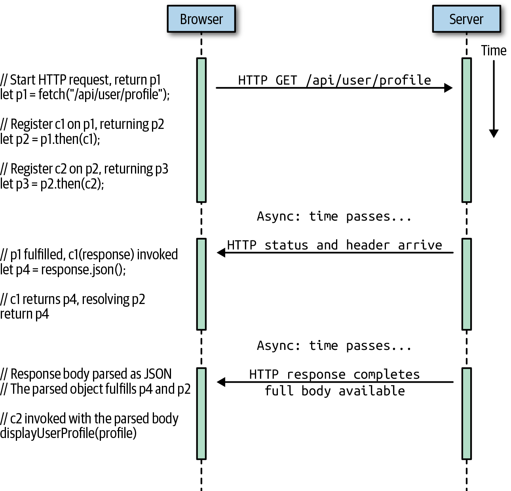

第 13 章 异步 JavaScript
- 13.1 Asynchronous Programming with Callbacks
- 13.2 Promises
- 13.3 async and await
- 13.4 Asynchronous Iteration
- 13.5 Summary
Some computer programs, such as scientific simulations and machine learning models, are compute-bound: they run continuously, without pause, until they have computed their result. Most real-world computer programs, however, are significantly asynchronous. This means that they often have to stop computing while waiting for data to arrive or for some event to occur. JavaScript programs in a web browser are typically event-driven, meaning that they wait for the user to click or tap before they actually do anything. And JavaScript-based servers typically wait for client requests to arrive over the network before they do anything.
一些计算机程序，如科学模拟和机器学习模型，是计算受限的：它们不停地运行，没有停顿，直到计算出结果。然而，值得注意的是现实世界中的大多数计算机程序都是异步的。这意味着在等待数据到达或某些事件发生时，它们常常不得不停止计算。web 浏览器中的 JavaScript 程序是典型地事件驱动的，这意味着它们在实际执行任何操作之前等待用户单击或点击。基于 javascript 的服务器通常在执行任何操作之前等待客户机请求通过网络到达。
This kind of asynchronous programming is commonplace in JavaScript, and this chapter documents three important language features that help make it easier to work with asynchronous code. Promises, new in ES6, are objects that represent the not-yet-available result of an asynchronous operation. The keywords async and await were introduced in ES2017 and provide new syntax that simplifies asynchronous programming by allowing you to structure your Promise-based code as if it was synchronous. Finally, asynchronous iterators and the for/await loop were introduced in ES2018 and allow you to work with streams of asynchronous events using simple loops that appear synchronous.
这种异步编程在 JavaScript 中很常见，本章将介绍三种重要的语言特性，它们有助于简化异步代码的使用。Promise 是 ES6 中的新特性，是表示目前不可用结果的异步操作对象。关键字 async 和 await 是在 ES2017 中引入的，它们提供了新的语法，通过允许将基于 Promise 的代码构造成同步的方式来简化异步编程。最后，在 ES2018 中引入了异步迭代器和 for/await 循环，允许使用简单的同步循环处理异步事件流。
Ironically, even though JavaScript provides these powerful features for working with asynchronous code, there are no features of the core language that are themselves asynchronous. In order to demonstrate Promises, async, await, and for/await, therefore, we will first take a detour into client-side and server-side JavaScript to explain some of the asynchronous features of web browsers and Node. (You can learn more about client-side and server-side JavaScript in Chapters 15 and 16.)
具有讽刺意味的是，尽管 JavaScript 为处理异步代码提供了这些强大的特性，但核心语言本身并没有异步的特性。因此，为了演示 Promise、async、await 和 for/await，我们将首先使用客户端和服务器端 JavaScript 来解释 web 浏览器和 Node 的一些异步特性。（可以在第 15 章和第 16 章中了解更多关于客户端和服务器端 JavaScript 的知识。）
13.1 Asynchronous Programming with Callbacks
At its most fundamental level, asynchronous programming in JavaScript is done with callbacks. A callback is a function that you write and then pass to some other function. That other function then invokes (“calls back”) your function when some condition is met or some (asynchronous) event occurs. The invocation of the callback function you provide notifies you of the condition or event, and sometimes, the invocation will include function arguments that provide additional details. This is easier to understand with some concrete examples, and the subsections that follow demonstrate various forms of callback-based asynchronous programming using both client-side JavaScript and Node.
在最基本的层次上，JavaScript 中的异步编程是通过回调来完成的。回调是一个你编写的函数，然后传递给其他函数。当满足某些条件或发生某些（异步）事件时，其他函数调用（“回调”）你的函数。提供的回调函数的调用会通知你条件或事件，有时，调用将提供包含额外细节的函数实参。通过一些具体的示例会更容易理解，下面的子节将演示使用客户端 JavaScript 和 Node 的各种形式的基于回调的异步编程。
13.1.1 Timers
One of the simplest kinds of asynchrony is when you want to run some code after a certain amount of time has elapsed. As we saw in §11.10, you can do this with the setTimeout() function:
当希望在经过一定时间后运行某些代码是一种最简单的异步类型。正如我们在 §11.10 中看到的，可以通过 setTimeout() 函数来做到这一点：
setTimeout(checkForUpdates, 60000);
The first argument to setTimeout() is a function and the second is a time interval measured in milliseconds. In the preceding code, a hypothetical checkForUpdates() function will be called 60,000 milliseconds (1 minute) after the setTimeout() call. checkForUpdates() is a callback function that your program might define, and setTimeout() is the function that you invoke to register your callback function and specify under what asynchronous conditions it should be invoked.
setTimeout() 的第一个实参是一个函数，第二个实参是一个以毫秒为单位的时间间隔。前面的代码中，在 setTimeout() 调用后 60,000 毫秒（1分钟）后，将调用一个假定的 checkForUpdates() 函数。checkForUpdates() 是程序定义的一个回调函数，而 setTimeout() 是用于注册回调函数并指定应该在什么异步条件下调用它的函数。
setTimeout() calls the specified callback function one time, passing no arguments, and then forgets about it. If you are writing a function that really does check for updates, you probably want it to run repeatedly. You can do this by using setInterval() instead of setTimeout():
setTimeout() 调用一次指定的回调函数，不传递任何实参，然后忘记它。如果正在编写一个检查更新的函数，可能希望它重复运行。可以使用 setInterval() 来代替 setTimeout()：
// Call checkForUpdates in one minute and then again every minute after that
let updateIntervalId = setInterval(checkForUpdates, 60000);
// setInterval() returns a value that we can use to stop the repeated
// invocations by calling clearInterval(). (Similarly, setTimeout()
// returns a value that you can pass to clearTimeout())
function stopCheckingForUpdates() {
clearInterval(updateIntervalId);
}
13.1.2 Events
Client-side JavaScript programs are almost universally event driven: rather than running some kind of predetermined computation, they typically wait for the user to do something and then respond to the user’s actions. The web browser generates an event when the user presses a key on the keyboard, moves the mouse, clicks a mouse button, or touches a touchscreen device. Event-driven JavaScript programs register callback functions for specified types of events in specified contexts, and the web browser invokes those functions whenever the specified events occur. These callback functions are called event handlers or event listeners, and they are registered with addEventListener():
客户端 JavaScript 程序几乎都是由事件驱动的：它们通常不等待用户执行某种预定的计算，而是等待用户执行某些操作，然后响应用户的操作。当用户按下键盘上的键，移动鼠标，单击鼠标按钮或触摸触摸屏设备时，Web 浏览器会发生事件。事件驱动的 JavaScript 程序在指定的上下文中为指定类型的事件注册回调函数，并且只要指定事件发生，Web 浏览器就会调用这些函数。这些回调函数称为事件句柄或事件监听器，并且使用 addEventListener() 注册：
// Ask the web browser to return an object representing the HTML
// <button> element that matches this CSS selector
let okay = document.querySelector('#confirmUpdateDialog button.okay');
// Now register a callback function to be invoked when the user
// clicks on that button.
okay.addEventListener('click', applyUpdate);
In this example, applyUpdate() is a hypothetical callback function that we assume is implemented somewhere else. The call to document.querySelector() returns an object that represents a single specified element in the web page. We call addEventListener() on that element to register our callback. Then the first argument to addEventListener() is a string that specifies the kind of event we’re interested in—a mouse click or touchscreen tap, in this case. If the user clicks or taps on that specific element of the web page, then the browser will invoke our applyUpdate() callback function, passing an object that includes details (such as the time and the mouse pointer coordinates) about the event.
在此示例中，假设 applyUpdate() 是我们在某个地方实现的回调函数。调用 document.querySelector() 返回一个对象，该对象表示网页中的单个指定元素。我们在该元素上调用 addEventListener() 来注册我们的回调。然后，addEventListener() 的第一个实参是一个字符串，该字符串指定了事件的类型（在这种情况下是单击鼠标或触摸屏）。如果用户单击或点击网页上的特定元素，则浏览器将调用我们的 applyUpdate() 回调函数，并传递一个包含事件详细信息（例如时间和鼠标指针坐标）的对象。
13.1.3 Network Events
Another common source of asynchrony in JavaScript programming is network requests. JavaScript running in the browser can fetch data from a web server with code like this:
JavaScript 编程中异步的另一个常见来源是网络请求。在浏览器中运行的 JavaScript 可以使用以下代码从 Web 服务器获取数据：
function getCurrentVersionNumber(versionCallback) { // Note callback argument
// Make a scripted HTTP request to a backend version API
let request = new XMLHttpRequest();
request.open("GET", "http://www.example.com/api/version");
request.send();
// Register a callback that will be invoked when the response arrives
request.onload = function() {
if (request.status === 200) {
// If HTTP status is good, get version number and call callback.
let currentVersion = parseFloat(request.responseText);
versionCallback(null, currentVersion);
} else {
// Otherwise report an error to the callback
versionCallback(response.statusText, null);
}
};
// Register another callback that will be invoked for network errors
request.onerror = request.ontimeout = function(e) {
versionCallback(e.type, null);
};
}
Client-side JavaScript code can use the XMLHttpRequest class plus callback functions to make HTTP requests and asynchronously handle the server’s response when it arrives.1 The getCurrentVersionNumber() function defined here (we can imagine that it is used by the hypothetical checkForUpdates() function we discussed in §13.1.1) makes an HTTP request and defines event handlers that will be invoked when the server’s response is received or when a timeout or other error causes the request to fail.
客户端 JavaScript 代码可以使用 XMLHttpRequest 类以及回调函数来发出 HTTP 请求，并在服务器响应时异步处理。[1] 这里定义的 getCurrentVersionNumber() 函数（我们可以假设在 §13.1.1 提到的 checkForUpdates() 函数使用了该函数）发出 HTTP 请求并定义事件处理程序，该事件处理程序将在收到服务器的响应或超时或其他异常导致请求失败时被调用。
Notice that the code example above does not call addEventListener() as our previous example did. For most web APIs (including this one), event handlers can be defined by invoking addEventListener() on the object generating the event and passing the name of the event of interest along with the callback function. Typically, though, you can also register a single event listener by assigning it directly to a property of the object. That is what we do in this example code, assigning functions to the onload, onerror, and ontimeout properties. By convention, event listener properties like these always have names that begin with on. addEventListener() is the more flexible technique because it allows for multiple event handlers. But in cases where you are sure that no other code will need to register a listener for the same object and event type, it can be simpler to simply set the appropriate property to your callback.
请注意，上面的代码示例未像前面的示例那样调用 addEventListener()。对于大多数 Web API（包括此API），可以通过在生成事件的对象上调用 addEventListener() 并将事件的名称与回调函数一起传递来定义事件处理程序。不过，通常，也可以通过将单个事件侦听器直接分配给对象的属性来注册它。这就是我们在此示例代码中所做的，将函数分配给 onload、onerror 和 ontimeout 属性。按照惯例，此类事件侦听器属性的名称始终以 on 开头。 addEventListener() 是更灵活的技术，因为它允许多个事件处理程序。但是，如果确定没有其他代码需要为相同的对象和事件类型注册一个侦听器，则只需将适当的属性设置为回调会更简单。
Another thing to note about the getCurrentVersionNumber() function in this example code is that, because it makes an asynchronous request, it cannot synchronously return the value (the current version number) that the caller is interested in. Instead, the caller passes a callback function, which is invoked when the result is ready or when an error occurs. In this case, the caller supplies a callback function that expects two arguments. If the XMLHttpRequest works correctly, then getCurrentVersionNumber() invokes the callback with a null first argument and the version number as the second argument. Or, if an error occurs, then getCurrentVersionNumber() invokes the callback with error details in the first argument and null as the second argument.
此示例代码中关于 getCurrentVersionNumber() 函数的另一点注意事项是，由于它发出异步请求，因此无法同步返回调用者感兴趣的值（当前版本号）。相反，调用者传递了一个回调函数，当结果准备就绪或发生异常时调用。在这种情况下，调用方提供了一个回调函数，该函数需要两个参数。如果 XMLHttpRequest 正常工作，则 getCurrentVersionNumber() 会使用 null 为第一个实参和版本号为第二个实参调用回调函数。或者，如果发生异常，则 getCurrentVersionNumber() 会在第一个实参中带有异常详细信息，而在第二个参数中使用 null。
13.1.4 Callbacks and Events in Node
The Node.js server-side JavaScript environment is deeply asynchronous and defines many APIs that use callbacks and events. The default API for reading the contents of a file, for example, is asynchronous and invokes a callback function when the contents of the file have been read:
const fs = require("fs"); // The "fs" module has filesystem-related APIs
let options = { // An object to hold options for our program
// default options would go here
};
// Read a configuration file, then call the callback function
fs.readFile("config.json", "utf-8", (err, text) => {
if (err) {
// If there was an error, display a warning, but continue
console.warn("Could not read config file:", err);
} else {
// Otherwise, parse the file contents and assign to the options object
Object.assign(options, JSON.parse(text));
}
// In either case, we can now start running the program
startProgram(options);
});
Node’s fs.readFile() function takes a two-parameter callback as its last argument. It reads the specified file asynchronously and then invokes the callback. If the file was read successfully, it passes the file contents as the second callback argument. If there was an error, it passes the error as the first callback argument. In this example, we express the callback as an arrow function, which is a succinct and natural syntax for this kind of simple operation.
Node also defines a number of event-based APIs. The following function shows how to make an HTTP request for the contents of a URL in Node. It has two layers of asynchronous code handled with event listeners. Notice that Node uses an on() method to register event listeners instead of addEventListener():
const https = require("https");
// Read the text content of the URL and asynchronously pass it to the callback.
function getText(url, callback) {
// Start an HTTP GET request for the URL
request = https.get(url);
// Register a function to handle the "response" event.
request.on("response", response => {
// The response event means that response headers have been received
let httpStatus = response.statusCode;
// The body of the HTTP response has not been received yet.
// So we register more event handlers to to be called when it arrives.
response.setEncoding("utf-8"); // We're expecting Unicode text
let body = ""; // which we will accumulate here.
// This event handler is called when a chunk of the body is ready
response.on("data", chunk => { body += chunk; });
// This event handler is called when the response is complete
response.on("end", () => {
if (httpStatus === 200) { // If the HTTP response was good
callback(null, body); // Pass response body to the callback
} else { // Otherwise pass an error
callback(httpStatus, null);
}
});
});
// We also register an event handler for lower-level network errors
request.on("error", (err) => {
callback(err, null);
});
}
13.2 Promises
Now that we’ve seen examples of callback and event-based asynchronous programming in client-side and server-side JavaScript environments, we can introduce Promises, a core language feature designed to simplify asynchronous programming.
现在，我们已经见过了客户端和服务器端 JavaScript 环境中基于回调和基于事件的异步编程的示例，我们接着介绍 Promise，这是一种旨在简化异步编程的核心语言特性。
A Promise is an object that represents the result of an asynchronous computation. That result may or may not be ready yet, and the Promise API is intentionally vague about this: there is no way to synchronously get the value of a Promise; you can only ask the Promise to call a callback function when the value is ready. If you are defining an asynchronous API like the getText() function in the previous section, but want to make it Promise-based, omit the callback argument, and instead return a Promise object. The caller can then register one or more callbacks on this Promise object, and they will be invoked when the asynchronous computation is done.
Promise 是描述异步计算结果的对象。该结果可能准备好或尚未准备好，Promise API 故意对此含糊其词：无法同步获取 Promise 的值；只能要求 promise 在值准备好时调用回调函数。如果要像上一节中的 getText() 函数那样定义异步 API，但想使其基于 Promise，则省略 callback 参数，而返回 Promise 对象。然后，调用者可以在此 Promise 对象上注册一个或多个回调，并且在异步计算完成后将调用它们。
So, at the simplest level, Promises are just a different way of working with callbacks. However, there are practical benefits to using them. One real problem with callback-based asynchronous programming is that it is common to end up with callbacks inside callbacks inside callbacks, with lines of code so highly indented that it is difficult to read. Promises allow this kind of nested callback to be re-expressed as a more linear Promise chain that tends to be easier to read and easier to reason about.
因此，最简单的说，promise 只是使用回调的另一种方式。但是，使用它有实际的好处。基于回调的异步编程的一个真正的问题是，通常在回调内部嵌套多层回调，并且代码行缩进程度很高，以至于很难阅读。Promise 允许将这种嵌套的回调作为更线性的 Promise 链重新表达，该链往往更易于阅读和推理。
Another problem with callbacks is that they can make handling errors difficult. If an asynchronous function (or an asynchronously invoked callback) throws an exception, there is no way for that exception to propagate back to the initiator of the asynchronous operation. This is a fundamental fact about asynchronous programming: it breaks exception handling. The alternative is to meticulously track and propagate errors with callback arguments and return values, but this is tedious and difficult to get right. Promises help here by standardizing a way to handle errors and providing a way for errors to propagate correctly through a chain of promises.
回调的另一个问题是，它们会使处理异常变得困难。如果异步函数（或异步调用的回调）引发异常，则该异常无法传播回异步操作的发起者。这是关于异步编程的基本事实：它破坏了异常处理。替代方法是使用回调实参和返回值来精心跟踪和传播异常，但这很繁琐且难以正确处理。Promise 通过标准化处理异常的方式以及为异常通过 Promise 链正确传播的方式提供帮助。
Note that Promises represent the future results of single asynchronous computations. They cannot be used to represent repeated asynchronous computations, however. Later in this chapter, we’ll write a Promise-based alternative to the setTimeout() function, for example. But we can’t use Promises to replace setInterval() because that function invokes a callback function repeatedly, which is something that Promises are just not designed to do. Similarly, we could use a Promise instead of the “load” event handler of an XMLHttpRequest object, since that callback is only ever called once. But we typically would not use a Promise in place of a “click” event handler of an HTML button object, since we normally want to allow the user to click a button multiple times.
请注意，promise 表示单个异步计算的未来结果。但是，它不能用于表示重复的异步计算。例如，在本章的后面，我们将写一个基于 Promise 的 setTieout() 函数替代方法。但是，我们不能使用 Promise 来代替 setInterval()，因为该函数会反复调用回调函数，而 Promise 并不是。同样，我们可以使用 Promise 代替 XMLHttpRequest 对象的“load”事件处理程序，因为该回调仅被调用一次。但是我们通常不会使用 Promise 来代替 HTML 按钮对象的“click”事件处理程序，因为我们通常希望允许用户多次单击按钮。
The subsections that follow will:
接下来的小节将：
- Explain Promise terminology and show basic Promise usage
- Show how promises can be chained
- Demonstrate how to create your own Promise-based APIs
- 解释 Promise 术语并演示 Promise 的基本用法
- 展示如何将 Promise 链接起来
- 演示如何创建自己的基于 Promise 的 API
IMPORTANT
Promises seem simple at first, and the basic use case for Promises is, in fact, straightforward and simple. But they can become surprisingly confusing for anything beyond the simplest use cases. Promises are a powerful idiom for asynchronous programming, but you need to understand them deeply to use them correctly and confidently. It is worth taking the time to develop that deep understanding, however, and I urge you to study this long chapter carefully.
Promise 一开始似乎很简单，并且 Promise 的基本用例实际上也是简单明了的。但是，除了最简单的用例之外，它们还会使其他任何事情变得令人困惑。对于异步编程，Promise 是一个强大的习惯用法，但是需要深刻理解它们，才能正确、自信地使用它们。但是，它值得花时间来深入理解，我建议仔细阅读这一长篇章。
13.2.1 Using Promises
With the advent of Promises in the core JavaScript language, web browsers have begun to implement Promise-based APIs. In the previous section, we implemented a getText() function that made an asynchronous HTTP request and passed the body of the HTTP response to a specified callback function as a string. Imagine a variant of this function, getJSON(), which parses the body of the HTTP response as JSON and returns a Promise instead of accepting a callback argument. We will implement a getJSON() function later in this chapter, but for now, let’s look at how we would use this Promise-returning utility function:
随着核心 JavaScript 语言中 Promise 的出现，Web 浏览器已经开始实现基于 Promise 的 API。在上一节中，我们实现了一个 getText() 函数，该函数发出一个异步 HTTP 请求，并将 HTTP 响应的主体作为字符串传递给指定的回调函数。想象一下该函数的一个变体 getJSON()，它可以解析主体 HTTP 响应的形式为 JSON，并返回 Promise 而不是接受回调参数。我们将在本章稍后实现 getJSON() 函数，但现在，让我们看一下如何使用返回 Promise 功能程序函数：
getJSON(url).then(jsonData => {
// This is a callback function that will be asynchronously
// invoked with the parsed JSON value when it becomes available.
});
getJSON() starts an asynchronous HTTP request for the URL you specify and then, while that request is pending, it returns a Promise object. The Promise object defines a then() instance method. Instead of passing our callback function directly to getJSON(), we instead pass it to the then() method. When the HTTP response arrives, the body of that response is parsed as JSON, and the resulting parsed value is passed to the function that we passed to then().
getJSON() 对指定的 URL 启动一个异步 HTTP 请求，当该请求待定时，它返回一个 Promise 对象。Promise 对象定义了 then() 实例方法。我们没有将回调函数直接传递给 getJSON()，而是将其传递给 then() 方法。当 HTTP 响应时，该响应的主体将解析为 JSON，并将所解析的结果值传给我们传递给 then() 的回调函数。
You can think of the then() method as a callback registration method like the addEventListener() method used for registering event handlers in client-side JavaScript. If you call the then() method of a Promise object multiple times, each of the functions you specify will be called when the promised computation is complete.
可以将 then() 方法视为回调注册方法，例如用于在客户端 JavaScript 中注册事件处理程序的 addEventListener() 方法。如果多次调用 Promise 对象的 then() 方法，则在完成 promise 的计算后将调用指定的每个函数。
Unlike many event listeners, though, a Promise represents a single computation, and each function registered with then() will be invoked only once. It is worth noting that the function you pass to then() is invoked asynchronously, even if the asynchronous computation is already complete when you call then().
但是，与许多事件侦听器不同，Promise 表示单个计算，并且 then() 注册的每个函数仅被调用一次。值得注意的是，传递给 then() 的函数是异步调用的，即使调用 then() 时异步计算已经完成。
At a simple syntactical level, the then() method is the distinctive feature of Promises, and it is idiomatic to append .then() directly to the function invocation that returns the Promise, without the intermediate step of assigning the Promise object to a variable.
在简单的语法级别上，then() 方法是 Promise 独有的特性，编码中习惯于将 .then() 直接跟随返回 Promise 的函数，而无需将 Promise 对象分配给变量的中间步骤。
It is also idiomatic to name functions that return Promises and functions that use the results of Promises with verbs, and these idioms lead to code that is particularly easy to read:
常用带有动词命名返回 Promise 的函数和使用 Promise 结果的函数，这些常用语使代码特别容易阅读：
// Suppose you have a function like this to display a user profile
function displayUserProfile(profile) { /* implementation omitted */ }
// Here's how you might use that function with a Promise.
// Notice how this line of code reads almost like an English sentence:
getJSON("/api/user/profile").then(displayUserProfile);
HANDLING ERRORS WITH PROMISES
Asynchronous operations, particularly those that involve networking, can typically fail in a number of ways, and robust code has to be written to handle the errors that will inevitably occur.
异步操作，尤其是涉及网络的异步操作，通常会以多种方式失败，并且必须编写健壮的代码来处理不可避免地会发生的异常。
For Promises, we can do this by passing a second function to the then() method:
对于 Promise，我们可以通过将第二个函数传递给 then() 方法来实现：
getJSON("/api/user/profile").then(displayUserProfile, handleProfileError);
A Promise represents the future result of an asynchronous computation that occurs after the Promise object is created. Because the computation is performed after the Promise object is returned to us, there is no way that the computation can traditionally return a value or throw an exception that we can catch. The functions that we pass to then() provide alternatives. When a synchronous computation completes normally, it simply returns its result to its caller. When a Promise-based asynchronous computation completes normally, it passes its result to the function that is the first argument to then().
Promise 描述在 Promise 对象创建之后发生的异步计算的未来结果。由于计算是在 Promise 对象返回给我们之后执行的，因此该计算无法传统地返回值或引发我们可以捕获的异常。我们传递给 then() 的函数提供了替代方案。当同步计算正常完成时，它仅将其结果返回给其调用者。当基于 Promise 的异步计算正常完成时，它将其结果传递给 then() 的第一个实参函数。
When something goes wrong in a synchronous computation, it throws an exception that propagates up the call stack until there is a catch clause to handle it. When an asynchronous computation runs, its caller is no longer on the stack, so if something goes wrong, it is simply not possible to throw an exception back to the caller.
当同步计算中出现问题时，它将引发一个异常，该异常会沿调用堆栈传播，直到有一个 catch 子句来处理它为止。当异步计算运行时，它的调用者不再在堆栈上，因此，如果出现问题，则根本不可能将异常抛出给调用者。
Instead, Promise-based asynchronous computations pass the exception (typically as an Error object of some kind, though this is not required) to the second function passed to then(). So, in the code above, if getJSON() runs normally, it passes its result to displayUserProfile(). If there is an error (the user is not logged in, the server is down, the user’s internet connection dropped, the request timed out, etc.), then getJSON() passes an Error object to handleProfileError().
而基于 Promise 的异步计算将异常（通常是某种 Error 对象，尽管这不是必需的）传递给 then() 的第二个函数。因此，在上面的代码中，如果 getJSON() 正常运行，它将其结果传递给 displayUserProfile()。如果出现异常（用户未登录，服务器关闭，用户的 Internet 连接断开，请求超时等），则 getJSON() 会将 Error 对象传递给 handleProfileError()。
In practice, it is rare to see two functions passed to then(). There is a better and more idiomatic way of handling errors when working with Promises. To understand it, first consider what happens if getJSON() completes normally but an error occurs in displayUserProfile(). That callback function is invoked asynchronously when getJSON() returns, so it is also asynchronous and cannot meaningfully throw an exception (because there is no code on the call stack to handle it).
实践中，很少有两个函数传递给 then()。在处理 Promise 时，有一种更好更常用的异常处理方式。为了理解它，首先考虑如果 getJSON() 正常完成但 displayUserProfile() 中发生异常该怎么办。当 getJSON() 返回时，该回调函数将异步调用，因此它也是异步的，并且无法有意义地引发异常（因为调用堆栈上没有代码可以处理该异常）。
The more idiomatic way to handle errors in this code looks like this:
如下所示，处理此代码中异常的更常用方式：
getJSON("/api/user/profile").then(displayUserProfile).catch(handleProfileError);
With this code, a normal result from getJSON() is still passed to displayUserProfile(), but any error in getJSON() or in displayUserProfile() (including any exceptions thrown by displayUserProfile) get passed to handleProfileError(). The catch() method is just a shorthand for calling then() with a null first argument and the specified error handler function as the second argument.
使用此代码，getJSON() 的正常结果仍会传递给 displayUserProfile()，但是 getJSON() 或 displayUserProfile() 中的任何异常（包括 displayUserProfile 抛出的任何异常）都将传递给 handleProfileError()。调用 then() 第一个实参为空，指定的异常处理函数为第二个实参，catch() 方法只是其简写。
We’ll have more to say about catch() and this error-handling idiom when we discuss Promise chains in the next section.
在下一节中讨论 Promise 链时，我们将对 catch() 和这个处理异常常用方法作更多的说明。
PROMISE TERMINOLOGY
Before we discuss Promises further, it is worth pausing to define some terms. When we are not programming and we talk about human promises, we say that a promise is “kept” or “broken.” When discussing JavaScript Promises, the equivalent terms are “fulfilled” and “rejected.” Imagine that you have called the then() method of a Promise and have passed two callback functions to it. We say that the promise has been fulfilled if and when the first callback is called. And we say that the Promise has been rejected if and when the second callback is called. If a Promise is neither fulfilled nor rejected, then it is pending. And once a promise is fulfilled or rejected, we say that it is settled. Note that a Promise can never be both fulfilled and rejected. Once a Promise settles, it will never change from fulfilled to rejected or vice versa.
在我们进一步讨论 Promises 之前，需要暂停定义一些术语。现实生活中，我们讨论下人类的诺言，我们说“信守”或“违背”诺言。在讨论 JavaScript Promise 时，用“已兑现（fulfilled）”和“已拒绝（rejected）”。想象一下，已经调用了 Promise 的 then() 方法，并向其传递了两个回调函数。当调用第一个回调，那么我们说 Promise 已兑现。当调用第二个回调，我们则说 Promise 已被拒绝。如果一个 Promise 既不是已兑现也不是已拒绝，那么它就是待定（pending）。一旦 Promise 已兑现或已拒绝，我们就说它已敲定（settled）。请注意，一个 Promise 永远不会同时已兑现和已拒绝。Promise 一旦敲定，就永远不会从已兑现变为已拒绝，反之亦然。
Remember how we defined Promises at the start of this section: “a Promise is an object that represents the result of an asynchronous operation.” It is important to remember that Promises are not just abstract ways registering callbacks to run when some async code finishes—they represent the results of that async code. If the async code runs normally (and the Promise is fulfilled), then that result is essentially the return value of the code. And if the async code does not complete normally (and the Promise is rejected), then the result is an Error object or some other value that the code might have thrown if it was not asynchronous. Any Promise that has settled has a value associated with it, and that value will not change. If the Promise is fulfilled, then the value is a return value that gets passed to any callback functions registered as the first argument of then(). If the Promise is rejected, then the value is an error of some sort that is passed to any callback functions registered with catch() or as the second argument of then().
记住我们在本节开始时如何定义 Promise：“Promise 是描述异步计算结果的对象。”重要的是要记住，Promise 不仅仅是注册在某些异步代码完成时运行的回调的抽象方式，它们还描述了异步代码的结果。如果异步代码正常运行（并且 Promise 已兑现），那么该结果实质上就是代码的返回值。而且，如果异步代码无法正常完成（并且 Promise 已拒绝），那么结果将是 Error 对象或其他不是异步的代码可能会抛出的值。任何已敲定的 Promise 都有与其相关的值，并且该值不会改变。如果 Promise 已兑现，则该值是一个返回值，该值将传递给注册为 then() 第一个实参的回调函数。如果 Promise 已拒绝，则该值是某种异常，该异常会传递给使用 catch() 或 then() 的第二个实参注册的回调函数。
The reason that I want to be precise about Promise terminology is that Promises can also be resolved. It is easy to confuse this resolved state with the fulfilled state or with settled state, but it is not precisely the same as either. Understanding the resolved state is one of the keys to a deep understanding of Promises, and I’ll come back to it after we’ve discussed Promise chains below.
我希望对 Promise 术语保持精确的原因是 Promise 还可以被决议。将已决议状态与已兑现状态或已敲定状态混淆是很容易的，但是三者都不完全相同。理解已决议状态是深入了解 Promise 的关键之一，在下面讨论了 Promise 链之后，我将再次介绍它。
13.2.2 Chaining Promises
One of the most important benefits of Promises is that they provide a natural way to express a sequence of asynchronous operations as a linear chain of then() method invocations, without having to nest each operation within the callback of the previous one. Here, for example, is a hypothetical Promise chain:
Promise 的最重要的好处之一是，它们提供了一种自然的方式来表达一系列异步操作，表示 then() 方法调用的线性链，而不必将每个操作嵌套在前一个回调中。例如，一个假设的 Promise 链：
fetch(documentURL) // Make an HTTP request
.then(response => response.json()) // Ask for the JSON body of the response
.then(document => { // When we get the parsed JSON
return render(document); // display the document to the user
})
.then(rendered => { // When we get the rendered document
cacheInDatabase(rendered); // cache it in the local database.
})
.catch(error => handle(error)); // Handle any errors that occur
This code illustrates how a chain of Promises can make it easy to express a sequence of asynchronous operations. We’re not going to discuss this particular Promise chain at all, however. We will continue to explore the idea of using Promise chains to make HTTP requests, however.
此代码表明了 Promise 链如何简化一系列异步操作。我们不会讨论这个特殊的 Promise 链。但是，我们将继续探索使用 Promise 链发出 HTTP 请求的想法。
Earlier in this chapter, we saw the XMLHttpRequest object used to make an HTTP request in JavaScript. That strangely named object has an old and awkward API, and it has largely been replaced by the newer, Promise-based Fetch API (§15.11.1). In its simplest form, this new HTTP API is just the function fetch(). You pass it a URL, and it returns a Promise. That promise is fulfilled when the HTTP response begins to arrive and the HTTP status and headers are available:
在本章的前面，我们看到了 XMLHttpRequest 对象，该对象用于在 JavaScript 中发出 HTTP 请求。这个奇怪命名的对象具有一个旧且笨拙的 API，并且在很大程度上已被较新的基于 Promise 的 Fetch API（§15.11.1）所取代。以最简单的形式，这个新的 HTTP API 只是 fetch() 函数。给它传递一个 URL，然后返回一个 Promise。当 HTTP 开始收到响应并且 HTTP 状态和标头可用时，这个 promise 已兑现：
fetch("/api/user/profile").then(response => {
// When the promise resolves, we have status and headers
if (response.ok &&
response.headers.get("Content-Type") === "application/json") {
// What can we do here? We don't actually have the response body yet.
}
});
When the Promise returned by fetch() is fulfilled, it passes a Response object to the function you passed to its then() method. This response object gives you access to request status and headers, and it also defines methods like text() and json(), which give you access to the body of the response in text and JSON-parsed forms, respectively. But although the initial Promise is fulfilled, the body of the response may not yet have arrived. So these text() and json() methods for accessing the body of the response themselves return Promises. Here’s a naive way of using fetch() and the response.json() method to get the body of an HTTP response:
当 fetch() 返回的 Promise 已兑现时，它将 Response 对象传递给传递给 then() 方法的函数。此响应对象可以访问请求状态和标头，并且还定义了诸如 text() 和 json() 之类的方法，这些方法可以分别以文本和 JSON 的形式访问响应的正文。但是，尽管最初的 Promise 已兑现，但响应的主体可能尚未到达。因此，这些用于访问响应正文的 text() 和 json() 方法本身返回 Promise。这是使用 fetch() 和 response.json() 方法获取 HTTP Response 响应正文的一种简单方法：
fetch("/api/user/profile").then(response => {
response.json().then(profile => { // Ask for the JSON-parsed body
// When the body of the response arrives, it will be automatically
// parsed as JSON and passed to this function.
displayUserProfile(profile);
});
});
This is a naive way to use Promises because we nested them, like callbacks, which defeats the purpose. The preferred idiom is to use Promises in a sequential chain with code like this:
这是 Promise 一种没经验的使用方式，因为我们像回调一样嵌套了它们，这违背了目的。首选常用方法是在顺序链中使用 Promise，其代码如下所示：
fetch("/api/user/profile")
.then(response => {
return response.json();
})
.then(profile => {
displayUserProfile(profile);
});
Let’s look at the method invocations in this code, ignoring the arguments that are passed to the methods:
让我们看一下这段代码中的方法调用，忽略传递给方法的参数：
fetch().then().then()
When more than one method is invoked in a single expression like this, we call it a method chain. We know that the fetch() function returns a Promise object, and we can see that the first .then() in this chain invokes a method on that returned Promise object. But there is a second .then() in the chain, which means that the first invocation of the then() method must itself return a Promise.
当像这样在单个表达式中调用多个方法时，我们将其称为方法链。我们知道 fetch() 函数返回一个 Promise 对象，并且可以看到该链中的第一个 .then() 作为返回的 Promise 对象的方法调用。但是链中还有第二个 .then()，这意味着 then() 方法的第一次调用本身一定返回 Promise。
Sometimes, when an API is designed to use this kind of method chaining, there is just a single object, and each method of that object returns the object itself in order to facilitate chaining. That is not how Promises work, however. When we write a chain of .then() invocations, we are not registering multiple callbacks on a single Promise object. Instead, each invocation of the then() method returns a new Promise object. That new Promise object is not fulfilled until the function passed to then() is complete.
有时，当一个 API 设计为使用这种方法链接时，只有一个对象，并且该对象的每个方法都返回该对象本身以便于链接。但是，这不是 Promise 的工作方式。当我们编写一系列的 .then() 调用时，我们并未在单个 Promise 对象上注册多个回调。而是，对 then() 方法的每次调用都会返回一个新的 Promise 对象。在传递给 then() 的函数完成之前，新的 Promise 对象不会被兑现。
Let’s return to a simplified form of the original fetch() chain above. If we define the functions passed to the then() invocations elsewhere, we might refactor the code to look like this:
让我们回到上面原始 fetch() 链的简化形式。如果我们在其他地方定义传递给 then() 调用的函数，则可以将代码重构为如下形式：
fetch(theURL) // task 1; returns promise 1
.then(callback1) // task 2; returns promise 2
.then(callback2); // task 3; returns promise 3
Let’s walk through this code in detail:
让我们详细介绍这段代码：
- On the first line, fetch() is invoked with a URL. It initiates an HTTP GET request for that URL and returns a Promise. We’ll call this HTTP request “task 1” and we’ll call the Promise “promise 1”.
- On the second line, we invoke the then() method of promise 1, passing the callback1 function that we want to be invoked when promise 1 is fulfilled. The then() method stores our callback somewhere, then returns a new Promise. We’ll call the new Promise returned at this step “promise 2”, and we’ll say that “task 2” begins when callback1 is invoked.
- On the third line, we invoke the then() method of promise 2, passing the callback2 function we want invoked when promise 2 is fulfilled. This then() method remembers our callback and returns yet another Promise. We’ll say that “task 3” begins when callback2 is invoked. We can call this latest Promise “promise 3”, but we don’t really need a name for it because we won’t be using it at all.
- The previous three steps all happen synchronously when the expression is first executed. Now we have an asynchronous pause while the HTTP request initiated in step 1 is sent out across the internet.
- Eventually, the HTTP response starts to arrive. The asynchronous part of the fetch() call wraps the HTTP status and headers in a Response object and fulfills promise 1 with that Response object as the value.
- When promise 1 is fulfilled, its value (the Response object) is passed to our callback1() function, and task 2 begins. The job of this task, given a Response object as input, is to obtain the response body as a JSON object.
- Let’s assume that task 2 completes normally and is able to parse the body of the HTTP response to produce a JSON object. This JSON object is used to fulfill promise 2.
- The value that fulfills promise 2 becomes the input to task 3 when it is passed to the callback2() function. This third task now displays the data to the user in some unspecified way. When task 3 is complete (assuming it completes normally), then promise 3 will be fulfilled. But because we never did anything with promise 3, nothing happens when that Promise settles, and the chain of asynchronous computation ends at this point.
- 在第一行，使用 URL 调用 fetch()。它针对该 URL 发起 HTTP GET请求并返回 Promise。我们将这个 HTTP 请求称为“task 1”，将 Promise 称为“promise 1”。
- 在第二行，我们调用 promise 1 的 then() 方法，并传递 promise 1 在已兑现时要调用的 callback1 函数。then() 方法将回调函数存储在某个位置，然后返回一个新的 Promise。我们将在这一步返回的新 Promise 称为“promise 2”，并且我们说当 callback1 被调用时“task 2”开始。
- 在第三行，我们调用 promise 2 的 then() 方法，并传递 promise 2 在已兑现时要调用的 callback2 函数。这个 then() 方法会记住我们的回调并返回另一个 Promise。我们说“task 3”是在调用 callback2 时开始的。我们可以将最新的 Promise 称为“promise 3”，但是我们并不需要它的名称，因为我们根本不会使用它。
- 最初执行表达式时，前三个步骤都是同步发生的。现在，在第 1 步中启动的 HTTP 请求通过 Internet 发送时，我们有了异步暂停。
- 最终，HTTP 响应开始到达。fetch() 调用的异步部分将 HTTP 状态和标头包装在 Response 对象中，并以该 Response 对象作为值来兑现 promise 1。
- promise 1 已兑现后，其值（Response 对象）将传递到我们的 callback1() 函数，task 2 开始。以 Response 对象作为输入，此任务的工作是获得响应主体转化为 JSON 对象。
- 假设 task 2 正常完成，并且能够解析 HTTP 响应主体以生成 JSON 对象。此 JSON 对象用于兑现 promise 2。
- 兑现 promise 2 的值在传递给 callback2() 函数时成为 task 3 的输入。现在，第三个任务以某种未指定的方式向用户显示数据。当 task 3 完成时（假设它正常完成），则 promise 3 将被兑现。但是，因为我们从未对 promise 3 做任何事情，所以当 promise 3 敲定时，什么也没有发生，并且异步计算链到此结束。
13.2.3 Resolving Promises
While explaining the URL-fetching Promise chain with the list in the last section, we talked about promises 1, 2, and 3. But there is actually a fourth Promise object involved as well, and this brings us to our important discussion of what it means for a Promise to be “resolved.”
在上一部分中用列表解释 URL-fetching Promise 链时，我们讨论了 promise 1、2 和 3。但是实际上也涉及第四个 Promise 对象，并且这为我们带来重要的讨论————什么是 Promise 的“已决议（resolved）”状态 。
Remember that fetch() returns a Promise object which, when fulfilled, passes a Response object to the callback function we register. This Response object has .text(), .json(), and other methods to request the body of the HTTP response in various forms. But since the body may not yet have arrived, these methods must return Promise objects. In the example we’ve been studying, “task 2” calls the .json() method and returns its value. This is the fourth Promise object, and it is the return value of the callback1() function.
请记住，fetch() 返回一个 Promise 对象，当其已兑现时，它将 Response 对象传递给我们注册的回调函数。此 Response 对象具有 .text()、.json() 和其他方法，以各种形式请求 HTTP 响应的主体。但是由于主体可能尚未到达，因此这些方法必须返回 Promise 对象。在我们一直在研究的示例中，“task 2”调用 .json() 方法并返回其值。这是第四个 Promise 对象，它是 callback1() 函数的返回值。
Let’s rewrite the URL-fetching code one more time in a verbose and nonidiomatic way that makes the callbacks and promises explicit:
让我们以冗长且非常用方式再次重写 URL-fetching 代码，使回调和 Promise 明确化：
function c1(response) { // callback 1
let p4 = response.json();
return p4; // returns promise 4
}
function c2(profile) { // callback 2
displayUserProfile(profile);
}
let p1 = fetch("/api/user/profile"); // promise 1, task 1
let p2 = p1.then(c1); // promise 2, task 2
let p3 = p2.then(c2); // promise 3, task 3
In order for Promise chains to work usefully, the output of task 2 must become the input to task 3. And in the example we’re considering here, the input to task 3 is the body of the URL that was fetched, parsed as a JSON object. But, as we’ve just discussed, the return value of callback c1 is not a JSON object, but Promise p4 for that JSON object. This seems like a contradiction, but it is not: when p1 is fulfilled, c1 is invoked, and task 2 begins. And when p2 is fulfilled, c2 is invoked, and task 3 begins. But just because task 2 begins when c1 is invoked, it does not mean that task 2 must end when c1 returns. Promises are about managing asynchronous tasks, after all, and if task 2 is asynchronous (which it is, in this case), then that task will not be complete by the time the callback returns.
为了使 Promise 链有效地工作，task 2 的输出必须成为 task 3 的输入。在此示例中，我们在这里考虑的是，task 3 的输入是从 URL 所获取的的主体，将其解析为 JSON 对象。但是，正如我们刚刚讨论的那样，回调 c1 的返回值不是 JSON 对象，而是该 JSON 对象的 Promise p4。这似乎有矛盾，但并非如此：当 p1 已兑现时，将调用 c1，并且 task 2 开始。当 p2 已兑现时，c2 被调用，task 3 开始。但是，仅仅因为 c1 被调用时开始 task 2 ，可这并不意味着 task 2 必须在 c1 返回时结束。毕竟，Promise 是关于管理异步任务的，如果 task 2 是异步的（在本例中为异步），则在回调返回时该任务将不会完成。
We are now ready to discuss the final detail that you need to understand to really master Promises. When you pass a callback c to the then() method, then() returns a Promise p and arranges to asynchronously invoke c at some later time. The callback performs some computation and returns a value v. When the callback returns, p is resolved with the value v. When a Promise is resolved with a value that is not itself a Promise, it is immediately fulfilled with that value. So if c returns a non-Promise, that return value becomes the value of p, p is fulfilled and we are done. But if the return value v is itself a Promise, then p is resolved but not yet fulfilled. At this stage, p cannot settle until the Promise v settles. If v is fulfilled, then p will be fulfilled to the same value. If v is rejected, then p will be rejected for the same reason. This is what the “resolved” state of a Promise means: the Promise has become associated with, or “locked onto,” another Promise. We don’t know yet whether p will be fulfilled or rejected, but our callback c no longer has any control over that. p is “resolved” in the sense that its fate now depends entirely on what happens to Promise v.
现在我们准备讨论最后的细节，需要了解这些才能真正掌握 Promise。当将回调 c 传递给 then() 方法时，then() 返回 Promise p 并安排在以后的某个时间异步调用 c。调执行一些计算并返回值 v。当回调返回时，p 用值 v 决议。当 Promise 使用不是本身的 Promise 值决议时，立即用该值兑现。因此，如果 c 返回一个非 Promise，则返回值成为 p 的值，则 p 已兑现并且任务完成。但是，如果返回值 v 本身是一个 Promise，则 p 已决议但尚未兑现。在此阶段，直到 Promise v 敲定，p 才能敲定。如果 v 已兑现，则 p 将被兑现为相同的值。如果 v 已拒绝，则 p 将因相同的原因而被拒绝。这就是一个 Promise 的“已决议（resolved）”状态的含义：Promise 已与另一个 Promise 关联或“锁定”。我们尚不知道 p 是已兑现还是拒绝，但是我们的回调 c 对此不再具有任何控制权。p 是“已决议”的，从这一方面来说它命运现在完全取决于 Promise v 会发生什么。
Let’s bring this back to our URL-fetching example. When c1 returns p4, p2 is resolved. But being resolved is not the same as being fulfilled, so task 3 does not begin yet. When the full body of the HTTP response becomes available, then the .json() method can parse it and use that parsed value to fulfill p4. When p4 is fulfilled, p2 is automatically fulfilled as well, with the same parsed JSON value. At this point, the parsed JSON object is passed to c2, and task 3 begins.
让我们回到我们的 URL-fetching 示例中。 当 c1 返回 p4 时，p2 已决议。但是已决议与已兑现并不相同，因此 task 3 尚未开始。当 HTTP 响应的全文可用时，.json() 方法可以对其进行解析，并使用该解析后的值来已兑现 p4。 当 p4 已兑现时，也会使用相同的已解析 JSON 值自动已兑现 p2。此时，已解析的 JSON 对象将传递给 c2，然后 task 3 开始。
This can be one of the trickiest parts of JavaScript to understand, and you may need to read this section more than once. Figure 13-1 presents the process in visual form and may help clarify it for you.
这可能是 JavaScript 最难理解的部分之一，可能需要多次阅读本节。图 13-1 以可视形式显示了该过程，可能有助于对其进行说明。
Figure 13-1 Fetching a URL with Promises

13.2.4 More on Promises and Errors
Earlier in the chapter, we saw that you can pass a second callback function to the .then() method and that this second function will be invoked if the Promise is rejected. When that happens, the argument to this second callback function is a value—typically an Error object—that represents the reason for the rejection. We also learned that it is uncommon (and even unidiomatic) to pass two callbacks to a .then() method. Instead, Promise-related errors are typically handled by adding a .catch() method invocation to a Promise chain. Now that we have examined Promise chains, we can return to error handling and discuss it in more detail. To preface the discussion, I’d like to stress that careful error handling is really important when doing asynchronous programming. With synchronous code, if you leave out error-handling code, you’ll at least get an exception and a stack trace that you can use to figure out what is going wrong. With asynchronous code, unhandled exceptions will often go unreported, and errors can occur silently, making them much harder to debug. The good news is that the .catch() method makes it easy to handle errors when working with Promises.
在本章的前面，我们看到可以将第二个回调函数传递给 .then() 方法，并且如果 Promise 被拒绝，则将调用该第二个函数。发生这种情况时，第二个回调函数的实参是一个值（通常是一个 Error 对象），它表示拒绝的原因。我们还了解到，将两个回调传递给 .then() 方法并不常见（甚至是单例的）。相反，通常通过向 Promise 链添加 .catch() 方法调用来处理与 Promise 相关的异常。现在我们已经检查了 Promise 链，我们可以返回异常处理并更详细地讨论它。在开始讨论之前，我想强调指出，进行异步编程时，仔细的异常处理非常重要。使用同步代码，如果省略了异常处理代码，则至少会得到一个异常和一个堆栈跟踪，可用于找出问题所在。对于异步代码，未处理的异常通常不会报告，异常可以静默发生，从而使调试更加困难。好消息是，使用 .catch() 方法可以更轻松地处理 Promise 的异常。
THE CATCH AND FINALLY METHODS
The .catch() method of a Promise is simply a shorthand way to call .then() with null as the first argument and an error-handling callback as the second argument. Given any Promise p and a callback c, the following two lines are equivalent:
.then() 可以处理异常，使用 null 为第一个实参，而异常处理回调为第二个实参，Promise 的 .catch() 方法只是这种 .then() 调用的一种简便写法。给定 Promise p 和回调 c，以下两行代码是等效的：
p.then(null, c);
p.catch(c);
The .catch() shorthand is preferred because it is simpler and because the name matches the catch clause in a try/catch exception-handling statement. As we’ve discussed, normal exceptions don’t work with asynchronous code. The .catch() method of Promises is an alternative that does work for asynchronous code. When something goes wrong in synchronous code, we can speak of an exception “bubbling up the call stack” until it finds a catch block. With an asynchronous chain of Promises, the comparable metaphor might be of an error “trickling down the chain” until it finds a .catch() invocation.
首选 .catch() 速记，因为它更简单，并且名称与 try/catch 异常处理语句中的 catch 子句匹配。正如我们所讨论的，普通例外不适用于异步代码。Promise 的 .catch() 方法是一种适用于异步代码的替代方法。当同步代码中出现问题时，我们“使调用堆栈冒泡”描述一个异常，直到找到 catch 块为止。对于异步的 Promise 链，则是“向链下滴”，直到找到 .catch() 调用为止。
In ES2018, Promise objects also define a .finally() method whose purpose is similar to the finally clause in a try/catch/finally statement. If you add a .finally() invocation to your Promise chain, then the callback you pass to .finally() will be invoked when the Promise you called it on settles. Your callback will be invoked if the Promise fulfills or rejects, and it will not be passed any arguments, so you can’t find out whether it fulfilled or rejected. But if you need to run some kind of cleanup code (such as closing open files or network connections) in either case, a .finally() callback is the ideal way to do that. Like .then() and .catch(), .finally() returns a new Promise object. The return value of a .finally() callback is generally ignored, and the Promise returned by .finally() will typically resolve or reject with the same value that the Promise that .finally() was invoked on resolves or rejects with. If a .finally() callback throws an exception, however, then the Promise returned by .finally() will reject with that value.
在 ES2018 中，Promise 对象还定义了一个 .finally() 方法，其目的类似于 try/catch/finally 语句中的 finally 子句。如果将 .finally() 调用添加到 Promise 链中，那么 .finally() 的调用者 Promise 的敲定的时候，传递给 .finally() 的回调将被调用。如果 Promise 已兑现或已拒绝，则将调用回调，并且它不会再作为实参传递，因此无法确定它是已兑现还是已拒绝。但是，无论哪种情况，如果都需要运行某种清理代码（例如关闭打开的文件或网络连接），则 .finally() 回调是实现此目的的理想方法。与 .then() 和 .catch() 一样，.finally() 返回一个新的 Promise 对象。.finally() 回调的返回值通常被忽略，.finally() 返回的 Promise 通常将以调用 .finally() 的 Promise 相同的值来决议或拒绝。但是，如果 .finally() 回调引发异常，则 .finally() 返回的 Promise 以该异常值拒绝。
The URL-fetching code that we studied in the previous sections did not do any error handling. Let’s correct that now with a more realistic version of the code:
我们在上一节中研究的 URL-fetching 代码没有任何异常处理。现在，使用更可行的代码版本进行更正：
fetch("/api/user/profile") // Start the HTTP request
.then(response => { // Call this when status and headers are ready
if (!response.ok) { // If we got a 404 Not Found or similar error
return null; // Maybe user is logged out; return null profile
}
// Now check the headers to ensure that the server sent us JSON.
// If not, our server is broken, and this is a serious error!
let type = response.headers.get("content-type");
if (type !== "application/json") {
throw new TypeError(`Expected JSON, got ${type}`);
}
// If we get here, then we got a 2xx status and a JSON content-type
// so we can confidently return a Promise for the response
// body as a JSON object.
return response.json();
})
.then(profile => { // Called with the parsed response body or null
if (profile) {
displayUserProfile(profile);
}
else { // If we got a 404 error above and returned null we end up here
displayLoggedOutProfilePage();
}
})
.catch(e => {
if (e instanceof NetworkError) {
// fetch() can fail this way if the internet connection is down
displayErrorMessage("Check your internet connection.");
}
else if (e instanceof TypeError) {
// This happens if we throw TypeError above
displayErrorMessage("Something is wrong with our server!");
}
else {
// This must be some kind of unanticipated error
console.error(e);
}
});
Let’s analyze this code by looking at what happens when things go wrong. We’ll use the naming scheme we used before: p1 is the Promise returned by the fetch() call. p2 is the Promise returned by the first .then() call, and c1 is the callback that we pass to that .then() call. p3 is the Promise returned by the second .then() call, and c2 is the callback we pass to that call. Finally, c3 is the callback that we pass to the .catch() call. (That call returns a Promise, but we don’t need to refer to it by name.)
让我们通过发生异常情况情况来分析此代码。我们将使用之前使用的命名方案：p1 是 fetch() 调用返回的 Promise。p2 是第一个 .then() 调用返回的 Promise，而 c1 是我们传递给该 .then() 的回调。p3 是第二个 .then() 调用返回的 Promise，而 c2 是我们传递给该调用的回调。最后，c3 是我们传递给 .catch() 的回调。（该调用返回一个 Promise，但我们不需要按名称引用它。）
The first thing that could fail is the fetch() request itself. If the network connection is down (or for some other reason an HTTP request cannot be made), then Promise p1 will be rejected with a NetworkError object. We didn’t pass an error-handling callback function as the second argument to the .then() call, so p2 rejects as well with the same NetworkError object. (If we had passed an error handler to that first .then() call, the error handler would be invoked, and if it returned normally, p2 would be resolved and/or fulfilled with the return value from that handler.) Without a handler, though, p2 is rejected, and then p3 is rejected for the same reason. At this point, the c3 error-handling callback is called, and the NetworkError-specific code within it runs.
第一个可能失败的是 fetch() 请求本身。如果网络连接断开（或由于某些其他原因而无法发出 HTTP 请求），则 Promise p1 将被 NetworkError 对象拒绝。我们没有将异常处理回调函数作为 .then() 调用的第二个实参传递，因此 p2 同样会被相同的 NetworkError 对象拒绝。（如果将异常处理程序传递给第一个 .then() 调用，则将调用该异常处理程序，并且如果该异常处理程序正常返回，伴随处理的返回值，p2 变为已决议和或或已兑现。）但是，出于相同的原因，p2 被拒绝，然后 p3 被拒绝。此时，将调用 c3 异常处理回调，并在其中运行特定于 NetworkError 的代码。
Another way our code could fail is if our HTTP request returns a 404 Not Found or another HTTP error. These are valid HTTP responses, so the fetch() call does not consider them errors. fetch() encapsulates a 404 Not Found in a Response object and fulfills p1 with that object, causing c1 to be invoked. Our code in c1 checks the ok property of the Response object to detect that it has not received a normal HTTP response and handles that case by simply returning null. Because this return value is not a Promise, it fulfills p2 right away, and c2 is invoked with this value. Our code in c2 explicitly checks for and handles falsy values by displaying a different result to the user. This is a case where we treat an abnormal condition as a nonerror and handle it without actually using an error handler.
代码失败的另一种方式是，如果我们的 HTTP 请求返回 404 Not Found 或另一个 HTTP 异常。这些是有效的 HTTP 响应，因此 fetch() 调用不会将其视为异常。fetch() 在 Response 对象中封装了一个 404 Not Found，并用该对象已兑现 p1，从而导致 c1 被调用。我们在 c1 中的代码检查 Response 对象的 ok 属性，以检测它没有收到正常的 HTTP 响应，并通过简单地返回 null 来处理这种情况。因为此返回值不是 Promise，所以它立即已兑现 p2，并使用该值调用 c2。 我们在 c2 中的代码显式检查并处理错误值，并向用户显示不同的结果。在这种情况下，我们将异常情况视为非异常，并在不使用异常处理程序的情况下对其进行处理。
A more serious error occurs in c1 if the we get a normal HTTP response code but the Content-Type header is not set appropriately. Our code expects a JSON-formatted response, so if the server is sending us HTML, XML, or plain text instead, we’re going to have a problem. c1 includes code to check the Content-Type header. If the header is wrong, it treats this as a nonrecoverable problem and throws a TypeError. When a callback passed to .then() (or .catch()) throws a value, the Promise that was the return value of the .then() call is rejected with that thrown value. In this case, the code in c1 that raises a TypeError causes p2 to be rejected with that TypeError object. Since we did not specify an error handler for p2, p3 will be rejected as well. c2 will not be called, and the TypeError will be passed to c3, which has code to explicitly check for and handle this type of error.
如果我们获得正常的 HTTP 响应代码，但 Content-Type 标头设置不正确，则 c1 中会发生更严重的异常。我们的代码需要一个 JSON 格式的响应，因此，如果服务器发送给我们的是 HTML、XML 或纯文本，那么我们将会遇到问题。c1 包含用于检查 Content-Type 标头的代码。如果标头错误，则将其视为不可恢复的问题，并引发 TypeError。当传递给 .then()（或 .catch()）的回调引发一个值时，作为 .then() 调用的返回的 Promise 将被该抛出的值拒绝。在这种情况下，c1 中的代码引发 TypeError 导致带有 TypeError 对象的 p2 一起被拒绝。由于我们没有为 p2 指定异常处理程序，因此 p3 也将被拒绝。c2 将不会被调用，并且 TypeError 将传递给 c3，后者具有显式检查和处理此类异常的代码。
There are a couple of things worth noting about this code. First, notice that the error object thrown with a regular, synchronous throw statement ends up being handled asynchronously with a .catch() method invocation in a Promise chain. This should make it clear why this shorthand method is preferred over passing a second argument to .then(), and also why it is so idiomatic to end Promise chains with a .catch() call.
关于此代码有些得注意。首先，请注意用常规的同步 throw 语句引发的异常对象最终会通过 Promise 链中的 .catch() 方法调用进行异步捕获。这清楚表明为什么与将第二个实参传递给 .then() 相比更偏向使用这种速记方法，以及为什么习惯以 .catch() 调用结束 Promise 链。
Before we leave the topic of error handling, I want to point out that, although it is idiomatic to end every Promise chain with a .catch() to clean up (or at least log) any errors that occurred in the chain, it is also perfectly valid to use .catch() elsewhere in a Promise chain. If one of the stages in your Promise chain can fail with an error, and if the error is some kind of recoverable error that should not stop the rest of the chain from running, then you can insert a .catch() call in the chain, resulting in code that might look like this:
在我们结束异常处理主题之前，我想指出，尽管习惯于在每个 Promise 链中添加一个 .catch() 来清理（或至少记录日志）该链中发生的任何异常，但是在 Promise 链中的其他位置使用 .catch() 也完全有效。如果 Promise 链中的某一阶段可能因异常而失败，并且该异常是某种可恢复的异常，并且该异常不会阻止链的其余部分运行，则可以在链中插入 .catch() 调用，代码可能如下所示：
startAsyncOperation()
.then(doStageTwo)
.catch(recoverFromStageTwoError)
.then(doStageThree)
.then(doStageFour)
.catch(logStageThreeAndFourErrors);
Remember that the callback you pass to .catch() will only be invoked if the callback at a previous stage throws an error. If the callback returns normally, then the .catch() callback will be skipped, and the return value of the previous callback will become the input to the next .then() callback. Also remember that .catch() callbacks are not just for reporting errors, but for handling and recovering from errors. Once an error has been passed to a .catch() callback, it stops propagating down the Promise chain. A .catch() callback can throw a new error, but if it returns normally, than that return value is used to resolve and/or fulfill the associated Promise, and the error stops propagating.
请记住，仅当前一阶段的回调引发异常时，才会调用传递给 catch() 的回调。如果该回调正常返回，则将跳过 catch() 回调，并且前一个回调的返回值将成为下一个 then() 回调的输入。还请记住，catch() 回调不仅用于异常报告，而且用于异常处理并从异常中恢复。将异常传递给 catch() 回调后，它将停止沿 Promise 链传播。catch() 回调可以引发新的异常，但是如果它正常返回，则该返回值用于决议和或或兑现关联的 Promise，并且异常停止传播。
Let’s be concrete about this: in the preceding code example, if either startAsyncOperation() or doStageTwo() throws an error, then the recoverFromStageTwoError() function will be invoked. If recoverFromStageTwoError() returns normally, then its return value will be passed to doStageThree() and the asynchronous operation continues normally. On the other hand, if recoverFromStageTwoError() was unable to recover, it will itself throw an error (or it will rethrow the error that it was passed). In this case, neither doStageThree() nor doStageFour() will be invoked, and the error thrown by recoverFromStageTwoError() would be passed to logStageThreeAndFourErrors().
让我们具体地讲一下：在前面的代码示例中，如果 startAsyncOperation() 或 doStageTwo() 引发异常，则将调用 recoveryFromStageTwoError() 函数。如果 restoreFromStageTwoError() 正常返回，则其返回值将传递给 doStageThree()，并且异步操作将正常继续。另一方面，如果 recoverFromStageTwoError() 无法恢复，则它本身将引发异常（或者重新抛出传入的异常）。在这种情况下，不会调用 doStageThree() 或 doStageFour()，并且 recoverFromStageTwoError() 引发的异常将传递给 logStageThreeAndFourErrors()。
Sometimes, in complex network environments, errors can occur more or less at random, and it can be appropriate to handle those errors by simply retrying the asynchronous request. Imagine you’ve written a Promise-based operation to query a database:
有时，在复杂的网络环境中，异常可能会或多或少地随机发生，并且可以通过简单地重试异步请求来处理这些异常。假设编写了一个基于 Promise 的操作来查询数据库：
queryDatabase()
.then(displayTable)
.catch(displayDatabaseError);
Now suppose that transient network load issues are causing this to fail about 1% of the time. A simple solution might be to retry the query with a .catch() call:
现在，假设大约 1％ 的概率瞬态网络负载问题导致其失败。一个简单的解决方案可能是使用 .catch() 调用重试查询：
queryDatabase()
.catch(e => wait(500).then(queryDatabase)) // On failure, wait and retry
.then(displayTable)
.catch(displayDatabaseError);
If the hypothetical failures are truly random, then adding this one line of code should reduce your error rate from 1% to .01%.
如果假设的失败确实是随机的，那么添加这一行代码应使错误率从 1％ 降低到 .01％。
RETURNING FROM A PROMISE CALLBACK
Let’s return one last time to the earlier URL-fetching example, and consider the c1 callback that we passed to the first .then() invocation. Notice that there are three ways that c1 can terminate. It can return normally with the Promise returned by the .json() call. This causes p2 to be resolved, but whether that Promise is fulfilled or rejected depends on what happens with the newly returned Promise. c1 can also return normally with the value null, which causes p2 to be fulfilled immediately. Finally, c1 can terminate by throwing an error, which causes p2 to be rejected. These are the three possible outcomes for a Promise, and the code in c1 demonstrates how the callback can cause each outcome.
让我们最后一次返回前面的 URL-fetching 示例，并考虑传递给第一个 .then() 调用的回调 c1。注意，c1 可以通过三种方式终止。它可以通过 .json() 调用返回的 Promise 正常返回。这将导致 p2 变为已决议，但是该 Promise 是已兑现还是拒绝取决于新返回的 Promise 发生了什么。c1 也可以正常返回 null 值，这将导致 p2 立即变成已兑现。最后，c1 可以通过引发异常来终止，从而导致 p2 变成已拒绝。这是 Promise 的三个可能结果，而 c1 中的代码演示了回调如何导致每个结果。
In a Promise chain, the value returned (or thrown) at one stage of the chain becomes the input to the next stage of the chain, so it is critical to get this right. In practice, forgetting to return a value from a callback function is actually a common source of Promise-related bugs, and this is exacerbated by JavaScript’s arrow function shortcut syntax. Consider this line of code that we saw earlier:
在 Promise 链中，在链的一个阶段返回（或抛出）的值成为链的下一阶段的输入，因此正确实现这一点至关重要。实际上，回调函数忘记返回值是与 Promise 相关的常见错误，而 JavaScript 的箭头函数快捷语法会加剧这种情况。回想一下我们之前看到的以下代码行：
.catch(e => wait(500).then(queryDatabase))
Recall from Chapter 8 that arrow functions allow a lot of shortcuts. Since there is exactly one argument (the error value), we can omit the parentheses. Since the body of the function is a single expression, we can omit the curly braces around the function body, and the value of the expression becomes the return value of the function. Because of these shortcuts, the preceding code is correct. But consider this innocuous-seeming change:
回顾第 8 章，箭头函数提供了许多快捷方式。由于仅存在一个参数（异常值），因此我们可以省略括号。由于函数的主体是单个表达式，因此我们可以省略函数主体周围的花括号，并且表达式的值成为函数的返回值。由于这些快捷方式，前面的代码是正确的。但是考虑一下这种无害的变化：
.catch(e => { wait(500).then(queryDatabase) })
By adding the curly braces, we no longer get the automatic return. This function now returns undefined instead of returning a Promise, which means that the next stage in this Promise chain will be invoked with undefined as its input rather than the result of the retried query. It is a subtle error that may not be easy to debug.
通过添加花括号，我们不再获得自动返回。现在，此函数返回 undefined 而不是返回 Promise，这意味着将以 undefined 作为输入而不是重试查询的结果来调用此 Promise 链中的下一个阶段。这是一个细微的错误，可能不容易调试。
13.2.5 Promises in Parallel
We’ve spent a lot of time talking about Promise chains for sequentially running the asynchronous steps of a larger asynchronous operation. Sometimes, though, we want to execute a number of asynchronous operations in parallel. The function Promise.all() can do this. Promise.all() takes an array of Promise objects as its input and returns a Promise. The returned Promise will be rejected if any of the input Promises are rejected. Otherwise, it will be fulfilled with an array of the fulfillment values of each of the input Promises. So, for example, if you want to fetch the text content of multiple URLs, you could use code like this:
我们花了很多时间讨论 Promise 链，这些链可按顺序运行较大的异步的操作步骤。但是，有时我们想并行执行许多异步操作。函数 Promise.all() 可以做到这一点。Promise.all() 将 Promise 对象数组作为其输入，并返回 Promise。如果任何输入的 Promise 中有一个是已拒绝状态，则返回的 Promise 将被拒绝。否则，它将使用每个输入 Promise 的兑现值组成的数组来被兑现。因此，例如，如果要获取多个 URL 的文本内容，则可以使用如下代码：
// We start with an array of URLs
const urls = [ /* zero or more URLs here */ ];
// And convert it to an array of Promise objects
promises = urls.map(url => fetch(url).then(r => r.text()));
// Now get a Promise to run all those Promises in parallel
Promise.all(promises)
.then(bodies => { /* do something with the array of strings */ })
.catch(e => console.error(e));
Promise.all() is slightly more flexible than described before. The input array can contain both Promise objects and non-Promise values. If an element of the array is not a Promise, it is treated as if it is the value of an already fulfilled Promise and is simply copied unchanged into the output array.
Promise.all() 比前面描述的要灵活一些。输入数组可以包含 Promise 对象和非 Promise 值。如果数组的元素不是 Promise，则将其视为已兑现的 Promise 的值，并原封不动地复制到输出数组中。
The Promise returned by Promise.all() rejects when any of the input Promises is rejected. This happens immediately upon the first rejection and can happen while other input Promises are still pending. In ES2020, Promise.allSettled() takes an array of input Promises and returns a Promise, just like Promise.all() does. But Promise.allSettled() never rejects the returned Promise, and it does not fulfill that Promise until all of the input Promises have settled. The Promise resolves to an array of objects, with one object for each input Promise. Each of these returned objects has a status property set to “fulfilled” or “rejected.” If the status is “fulfilled”, then the object will also have a value property that gives the fulfillment value. And if the status is “rejected”, then the object will also have a reason property that gives the error or rejection value of the corresponding Promise:
当任何输入的 Promise 被拒绝时，Promise.all() 返回的 Promise 也会被拒绝。这在第一次拒绝时立即发生，可能其他输入 Promise 仍是待定状态。在 ES2020 中，Promise.allSettled() 接受输入的 Promise 数组，并返回 Promise，就像 Promise.all() 一样。但是 Promise.allSettled() 永远不会拒绝返回的 Promise，并且不会兑现这个 Promise，直到所有输入 Promise 全部已敲定。Promise 解析为一组对象，每个输入 Promise 都有一个对象。每个返回的对象中有一个状态属性设置为“已兑现”或“已拒绝”。如果状态为“已兑现”，则对象还将具有一个 value 属性，该属性提供兑现值。并且，如果状态为“已拒绝”，则对象还将具有一个 reason 属性，该属性给出相应的 Promise 的异常或拒绝值：
Promise.allSettled([Promise.resolve(1), Promise.reject(2), 3]).then(results => {
results[0] // => { status: "fulfilled", value: 1 }
results[1] // => { status: "rejected", reason: 2 }
results[2] // => { status: "fulfilled", value: 3 }
});
Occasionally, you may want to run a number of Promises at once but may only care about the value of the first one to fulfill. In that case, you can use Promise.race() instead of Promise.all(). It returns a Promise that is fulfilled or rejected when the first of the Promises in the input array is fulfilled or rejected. (Or, if there are any non-Promise values in the input array, it simply returns the first of those.)
有时，可能想一次运行多个 Promise，但可能只关心第一个要兑现的值。在这种情况下，可以使用 Promise.race() 代替 Promise.all()。当输入数组中的第一个 Promise 是已兑现或已拒绝状态时，它返回一个已兑现或已拒绝的 Promise。（或者，如果输入数组中有任何非 Promise 值，则只返回其中的第一个。）
13.2.6 Making Promises
We’ve used the Promise-returning function fetch() in many of the previous examples because it is one of the simplest functions built in to web browsers that returns a Promise. Our discussion of Promises has also relied on hypothetical Promise-returning functions getJSON() and wait(). Functions written to return Promises really are quite useful, and this section shows how you can create your own Promise-based APIs. In particular, we’ll show implementations of getJSON() and wait().
在之前的许多示例中，我们都使用了 Promise 返回函数 fetch()，因为它是内置于 Web 浏览器中的最简单的返回 Promise 的函数之一。我们对 Promise 的讨论还依赖于假设的 Promise 返回函数 getJSON() 和 wait()。编写用于返回 Promise 的函数确实非常有用，本节说明如何创建自己的基于 Promise 的 API。特别是，我们将展示 getJSON() 和 wait() 的实现。
PROMISES BASED ON OTHER PROMISES
It is easy to write a function that returns a Promise if you have some other Promise-returning function to start with. Given a Promise, you can always create (and return) a new one by calling .then(). So if we use the existing fetch() function as a starting point, we can write getJSON() like this:
如果以 Promise 返回函数作为开头来写一个返回 Promise 的函数是很容易的。有了 Promise，总是可以通过调用 .then() 创建（并返回）一个新的 Promise。因此，如果我们使用现有的 fetch() 函数作为起点，则可以这样编写 getJSON()：
function getJSON(url) {
return fetch(url).then(response => response.json());
}
The code is trivial because the Response object of the fetch() API has a predefined json() method. The json() method returns a Promise, which we return from our callback (the callback is an arrow function with a single-expression body, so the return is implicit), so the Promise returned by getJSON() resolves to the Promise returned by response.json(). When that Promise fulfills, the Promise returned by getJSON() fulfills to the same value. Note that there is no error handling in this getJSON() implementation. Instead of checking response.ok and the Content-Type header, we instead just allow the json() method to reject the Promise it returned with a SyntaxError if the response body cannot be parsed as JSON.
该代码很简单，因为 fetch() API 的 Response 对象具有预定义的 json() 方法。我们从回调（该回调是带有单个表达式主体的箭头函数，因此返回值是隐式的）中通过 json() 方法返回一个 Promise，因此 getJSON() 返回的 Promise 解析为 response.json()。当该 Promise 兑现时，由 getJSON() 返回的 Promise 将兑现为相同的值。请注意，此 getJSON() 实现中没有异常处理。如果不能将 response 主体解析为 JSON，则无需检查 response.ok 和 Content-Type 标头，而只需允许 json() 方法拒绝它的 Promise 并返回 SyntaxError。
Let’s write another Promise-returning function, this time using getJSON() as the source of the initial Promise:
让我们编写另一个 Promise 返回函数，这次使用 getJSON() 作为初始 Promise 的来源：
function getHighScore() {
return getJSON("/api/user/profile").then(profile => profile.highScore);
}
We’re assuming that this function is part of some sort of web-based game and that the URL “/api/user/profile” returns a JSON-formatted data structure that includes a highScore property.
我们假设此函数是某种基于网络的游戏的一部分，并且 URL“/api/user/profile”返回的是包含 highScore 属性的 JSON 格式的数据结构。
PROMISES BASED ON SYNCHRONOUS VALUES
Sometimes, you may need to implement an existing Promise-based API and return a Promise from a function, even though the computation to be performed does not actually require any asynchronous operations. In that case, the static methods Promise.resolve() and Promise.reject() will do what you want. Promise.resolve() takes a value as its single argument and returns a Promise that will immediately (but asynchronously) be fulfilled to that value. Similarly, Promise.reject() takes a single argument and returns a Promise that will be rejected with that value as the reason. (To be clear: the Promises returned by these static methods are not already fulfilled or rejected when they are returned, but they will fulfill or reject immediately after the current synchronous chunk of code has finished running. Typically, this happens within a few milliseconds unless there are many pending asynchronous tasks waiting to run.)
有时，即使要执行的计算实际上不需要任何异步操作，也可能需要实现现有的基于 Promise 的 API 并从函数返回 Promise。在这种情况下，静态方法 Promise.resolve() 和 Promise.reject() 会做您想要的。Promise.resolve() 采用一个单个实参值，并返回一个 Promise，该 Promise 将立即（但异步地）兑现为该值。同样，Promise.reject() 接受一个实参值，并返回一个 Promise，该值将作为被拒绝的原因。（请注意：这些静态方法返回的 Promise 在返回时尚未兑现或拒绝，但是它们将在当前同步代码块运行完毕后立即兑现或拒绝。通常，这种情况会在几毫秒内发生，除非有许多等待执行的待处理异步任务。）
Recall from §13.2.3 that a resolved Promise is not the same thing as a fulfilled Promise. When we call Promise.resolve(), we typically pass the fulfillment value to create a Promise object that will very soon fulfill to that value. The method is not named Promise.fulfill(), however. If you pass a Promise p1 to Promise.resolve(), it will return a new Promise p2, which is immediately resolved, but which will not be fulfilled or rejected until p1 is fulfilled or rejected.
回顾 §13.2.3，已决议的 Promise 与已兑现的 Promise 不同。当我们调用 Promise.resolve() 时，通常会传递兑现值以创建一个 Promise 对象，该对象将很快兑现该值。但是，该方法未命名为 Promise.fulfill()。如果将 Promise p1 传递给 Promise.resolve()，它将返回一个新的 Promise p2，该 p2 立即被决议，但是直到 p1 被兑现或拒绝，该 Promise p2 才会被兑现或拒绝。
It is possible, but unusual, to write a Promise-based function where the value is computed synchronously and returned asynchronously with Promise.resolve(). It is fairly common, however, to have synchronous special cases within an asynchronous function, and you can handle these special cases with Promise.resolve() and Promise.reject(). In particular, if you detect error conditions (such as bad argument values) before beginning an asynchronous operation, you can report that error by returning a Promise created with Promise.reject(). (You could also just throw an error synchronously in that case, but that is considered poor form because then the caller of your function needs to write both a synchronous catch clause and use an asynchronous .catch() method to handle errors.) Finally, Promise.resolve() is sometimes useful to create the initial Promise in a chain of Promises. We’ll see a couple of examples that use it this way.
可以（但不常见）编写一个基于 Promise 的函数，同步计算的值通过通过 Promise.resolve() 异步返回。但是，在异步函数中包含同步特殊情况是很常见的，可以使用 Promise.resolve() 和 Promise.reject() 处理这些特殊情况。特别是，如果在开始异步操作之前检测到异常条件（例如异常的实参值），则可以通过返回使用 Promise.reject() 创建的 Promise 来报告该异常。（在这种情况下，也可以同步引发异常，但这被认为是较差的形式，因为函数的调用者需要同时编写同步 catch 子句并使用异步 .catch() 方法来处理异常。）最后，Promise.resolve() 有时可用于在 Promise 链中创建初始 Promise。我们将看到几个使用这种方式的示例。
PROMISES FROM SCRATCH
For both getJSON() and getHighScore(), we started off by calling an existing function to get an initial Promise, and created and returned a new Promise by calling the .then() method of that initial Promise. But what about writing a Promise-returning function when you can’t use another Promise-returning function as the starting point? In that case, you use the Promise() constructor to create a new Promise object that you have complete control over. Here’s how it works: you invoke the Promise() constructor and pass a function as its only argument. The function you pass should be written to expect two parameters, which, by convention, should be named resolve and reject. The constructor synchronously calls your function with function arguments for the resolve and reject parameters. After calling your function, the Promise() constructor returns the newly created Promise. That returned Promise is under the control of the function you passed to the constructor. That function should perform some asynchronous operation and then call the resolve function to resolve or fulfill the returned Promise or call the reject function to reject the returned Promise. Your function does not have to be asynchronous: it can call resolve or reject synchronously, but the Promise will still be resolved, fulfilled, or rejected asynchronously if you do this.
对于 getJSON() 和 getHighScore()，我们首先调用现有函数以获取初始 Promise，然后通过调用该初始 Promise 的 .then() 方法创建并返回新的 Promise。但是，当不能使用另一个返回 Promise 函数作为起点时，如何编写返回 Promise 函数呢？在这种情况下，可以使用 Promise() 构造函数创建一个可以完全控制的新 Promise 对象。它是这样工作的：调用 Promise() 构造函数并将一个函数作为唯一实参传递。传递的函数应编写为包含两个参数，按照惯例，应将其命名为 resolve 和 reject。构造函数会同步调用使用 resolve 和 reject 参数的函数。调用函数后，Promise() 构造函数将返回新创建的 Promise。返回的 Promise 受传递给构造函数的函数的控制。该函数应该执行一些异步操作，然后调用 resolve 函数来决议或兑现返回的 Promise，或者调用 reject 函数来拒绝返回的 Promise。函数不必是异步的：它可以同步地调用 resolve 或拒绝，但是如果这样做，Promise 仍将被异步地决议，兑现或拒绝。
It can be hard to understand the functions passed to a function passed to a constructor by just reading about it, but hopefully some examples will make this clear. Here’s how to write the Promise-based wait() function that we used in various examples earlier in the chapter:
仅仅阅读一下很难理解传递给构造函数的函数，但是希望有一些例子可以使这一点变得清楚。这是在本章前面的各种示例中使用的基于 Promise 的 wait() 函数的编写方法：
function wait(duration) {
// Create and return a new Promise
return new Promise((resolve, reject) => { // These control the Promise
// If the argument is invalid, reject the Promise
if (duration < 0) {
reject(new Error("Time travel not yet implemented"));
}
// Otherwise, wait asynchronously and then resolve the Promise.
// setTimeout will invoke resolve() with no arguments, which means
// that the Promise will fulfill with the undefined value.
setTimeout(resolve, duration);
});
}
Note that the pair of functions that you use to control the fate of a Promise created with the Promise() constructor are named resolve() and reject(), not fulfill() and reject(). If you pass a Promise to resolve(), the returned Promise will resolve to that new Promise. Often, however, you will pass a non-Promise value, which fulfills the returned Promise with that value.
请注意，用于控制由 Promise() 构造函数创建的 Promise 命运的一对函数分别命名为 resolve() 和 reject()，而不是 fulfill() 和 reject()。如果传递一个 Promise 给 resolve()，则返回的 Promise 将决议于该新的 Promise。但是，通常会传递一个非 Promise 值，返回的 Promise 会兑现这个值。
Example 13-1 is another example of using the Promise() constructor. This one implements our getJSON() function for use in Node, where the fetch() API is not built in. Remember that we started this chapter with a discussion of asynchronous callbacks and events. This example uses both callbacks and event handlers and is a good demonstration, therefore, of how we can implement Promise-based APIs on top of other styles of asynchronous programming.
示例 13-1 是使用 Promise() 构造函数的另一个示例。这一节实现了 Node 中在未内置 fetch() API 使用的 getJSON() 函数。请记住，本章开始时讨论了异步回调和事件。此示例同时使用了回调和事件处理程序，因此很好地演示了如何在其他风格的异步编程之上实现基于 Promise 的 API。
Example 13-1. An asynchronous getJSON() function
示例 13-1 异步 getJSON() 函数
const http = require("http");
function getJSON(url) {
// Create and return a new Promise
return new Promise((resolve, reject) => {
// Start an HTTP GET request for the specified URL
request = http.get(url, response => { // called when response starts
// Reject the Promise if the HTTP status is wrong
if (response.statusCode !== 200) {
reject(new Error(`HTTP status ${response.statusCode}`));
response.resume(); // so we don't leak memory
}
// And reject if the response headers are wrong
else if (response.headers["content-type"] !== "application/json") {
reject(new Error("Invalid content-type"));
response.resume(); // don't leak memory
}
else {
// Otherwise, register events to read the body of the response
let body = "";
response.setEncoding("utf-8");
response.on("data", chunk => { body += chunk; });
response.on("end", () => {
// When the response body is complete, try to parse it
try {
let parsed = JSON.parse(body);
// If it parsed successfully, fulfill the Promise
resolve(parsed);
} catch(e) {
// If parsing failed, reject the Promise
reject(e);
}
});
}
});
// We also reject the Promise if the request fails before we
// even get a response (such as when the network is down)
request.on("error", error => {
reject(error);
});
});
}
13.2.7 Promises in Sequence
Promise.all() makes it easy to run an arbitrary number of Promises in parallel. And Promise chains make it easy to express a sequence of a fixed number of Promises. Running an arbitrary number of Promises in sequence is trickier, however. Suppose, for example, that you have an array of URLs to fetch, but that to avoid overloading your network, you want to fetch them one at a time. If the array is of arbitrary length and unknown content, you can’t write out a Promise chain in advance, so you need to build one dynamically, with code like this:
Promise.all() 使得并行运行任意数量的 Promise 变得容易。Promise 链使表达固定数量的 Promise 序列变得容易。但是，依次执行任意数量的 Promise 会比较棘手。例如，假设您要获取一组 URL，但是为了避免网络过载，希望一次获取一个 URL。如果数组的长度是任意的且内容未知，则无法提前写出 Promise 链，因此需要使用以下代码动态构建一个：
function fetchSequentially(urls) {
// We'll store the URL bodies here as we fetch them
const bodies = [];
// Here's a Promise-returning function that fetches one body
function fetchOne(url) {
return fetch(url)
.then(response => response.text())
.then(body => {
// We save the body to the array, and we're purposely
// omitting a return value here (returning undefined)
bodies.push(body);
});
}
// Start with a Promise that will fulfill right away (with value undefined)
let p = Promise.resolve(undefined);
// Now loop through the desired URLs, building a Promise chain
// of arbitrary length, fetching one URL at each stage of the chain
for(url of urls) {
p = p.then(() => fetchOne(url));
}
// When the last Promise in that chain is fulfilled, then the
// bodies array is ready. So let's return a Promise for that
// bodies array. Note that we don't include any error handlers:
// we want to allow errors to propagate to the caller.
return p.then(() => bodies);
}
With this fetchSequentially() function defined, we could fetch the URLs one at a time with code much like the fetch-in-parallel code we used earlier to demonstrate Promise.all():
定义了这个 fetchSequentially() 函数之后，我们可以用一个代码一次来获取多个 URL，就像我们之前用来演示 Promise.all() 的并行获取代码一样：
fetchSequentially(urls)
.then(bodies => { /* do something with the array of strings */ })
.catch(e => console.error(e));
The fetchSequentially() function starts by creating a Promise that will fulfill immediately after it returns. It then builds a long, linear Promise chain off of that initial Promise and returns the last Promise in the chain. It is like setting up a row of dominoes and then knocking the first one over.
fetchSequentially() 函数首先创建一个 Promise，该 Promise 将在返回后立即兑现。然后，它从该初始 Promise 构建一个长的线性 Promise 链，并返回链中的最后一个 Promise。这就像设置一排多米诺骨牌，然后将第一个多米诺骨牌撞倒一样。
There is another (possibly more elegant) approach that we can take. Rather than creating the Promises in advance, we can have the callback for each Promise create and return the next Promise. That is, instead of creating and chaining a bunch of Promises, we instead create Promises that resolve to other Promises. Rather than creating a domino-like chain of Promises, we are instead creating a sequence of Promises nested one inside the other like a set of matryoshka dolls. With this approach, our code can return the first (outermost) Promise, knowing that it will eventually fulfill (or reject!) to the same value that the last (innermost) Promise in the sequence does. The promiseSequence() function that follows is written to be generic and is not specific to URL fetching. It is here at the end of our discussion of Promises because it is complicated. If you’ve read this chapter carefully, however, I hope you’ll be able to understand how it works. In particular, note that the nested function inside promiseSequence() appears to call itself recursively, but because the “recursive” call is through a then() method, there is not actually any traditional recursion happening:
我们可以采用另一种方法（可能更优雅）。除了提前创建 Promise 外，我们还可以为每个 Promise 创建回调，并返回下一个 Promise。也就是说，我们没有创建和链接一堆 Promise，而是创建了决议于其他承诺的承诺。与其创建类似多米诺骨牌的 Promise 链，不如创建一系列彼此嵌套在一起的 Promise 序列，就像俄罗斯套娃一样。使用这种方法，我们的代码可以知道第一个（最外面的）Promise 最终将兑现（或拒绝！），使其返回序列中最后一个（最里面的）Promise 相同的值。后面是通用的 promiseSequence() 函数，并不特定于 URL 提取。因为它很复杂，所以将它放在我们对 Promise 的讨论的结尾。但是，如果仔细阅读了本章，希望能理解它的工作原理。特别要注意的是，promiseSequence() 中的嵌套函数类似递归地调用自身，但是由于“递归”调用是通过 then() 方法进行的，因此实际上没有发生任何传统的递归：
// This function takes an array of input values and a "promiseMaker" function.
// For any input value x in the array, promiseMaker(x) should return a Promise
// that will fulfill to an output value. This function returns a Promise
// that fulfills to an array of the computed output values.
//
// Rather than creating the Promises all at once and letting them run in
// parallel, however, promiseSequence() only runs one Promise at a time
// and does not call promiseMaker() for a value until the previous Promise
// has fulfilled.
function promiseSequence(inputs, promiseMaker) {
// Make a private copy of the array that we can modify
inputs = [...inputs];
// Here's the function that we'll use as a Promise callback
// This is the pseudorecursive magic that makes this all work.
function handleNextInput(outputs) {
if (inputs.length === 0) {
// If there are no more inputs left, then return the array
// of outputs, finally fulfilling this Promise and all the
// previous resolved-but-not-fulfilled Promises.
return outputs;
} else {
// If there are still input values to process, then we'll
// return a Promise object, resolving the current Promise
// with the future value from a new Promise.
let nextInput = inputs.shift(); // Get the next input value,
return promiseMaker(nextInput) // compute the next output value,
// Then create a new outputs array with the new output value
.then(output => outputs.concat(output))
// Then "recurse", passing the new, longer, outputs array
.then(handleNextInput);
}
}
// Start with a Promise that fulfills to an empty array and use
// the function above as its callback.
return Promise.resolve([]).then(handleNextInput);
}
This promiseSequence() function is intentionally generic. We can use it to fetch URLs with code like this:
promiseSequence() 函数是通用的。我们可以使用它通过以下代码来获取 URL：
// Given a URL, return a Promise that fulfills to the URL body text
function fetchBody(url) { return fetch(url).then(r => r.text()); }
// Use it to sequentially fetch a bunch of URL bodies
promiseSequence(urls, fetchBody)
.then(bodies => { /* do something with the array of strings */ })
.catch(console.error);
13.3 async and await
ES2017 introduces two new keywords—async and await—that represent a paradigm shift in asynchronous JavaScript programming. These new keywords dramatically simplify the use of Promises and allow us to write Promise-based, asynchronous code that looks like synchronous code that blocks while waiting for network responses or other asynchronous events. Although it is still important to understand how Promises work, much of their complexity (and sometimes even their very presence!) vanishes when you use them with async and await.
ES2017 引入了两个新的关键字（async 和 await）描述异步 JavaScript 编程中的模式转变。这些新关键字极大地简化了 Promises 的使用，使我们能够编写基于 Promise 的异步代码看起来像是等待网络响应或其他异步事件而阻塞的同步代码。尽管了解 Promises 的工作原理仍然很重要，但是当将它们与 async 和 await 一起使用时，它们的大部分复杂性（有时甚至是它们的存在！）就消失了。
As we discussed earlier in the chapter, asynchronous code can’t return a value or throw an exception the way that regular synchronous code can. And this is why Promises are designed the way the are. The value of a fulfilled Promise is like the return value of a synchronous function. And the value of a rejected Promise is like a value thrown by a synchronous function. This latter similarity is made explicit by the naming of the .catch() method. async and await take efficient, Promise-based code and hide the Promises so that your asynchronous code can be as easy to read and as easy to reason about as inefficient, blocking, synchronous code.
如本章前面所述，异步代码无法像常规同步代码那样返回值或引发异常。这就是为什么 Promise 如此设计的原因。已兑现的 Promise 的值类似于同步函数的返回值。而且已拒绝的 Promise 的值就像同步函数抛出的值。后者通过类似的 .catch() 方法命名，使得表述更清晰。async 和 await 使用高效的、基于 Promise 的代码并隐藏 Promise，以便异步代码可以像低效、阻塞、同步代码一样容易阅读和推理。
13.3.1 await Expressions
The await keyword takes a Promise and turns it back into a return value or a thrown exception. Given a Promise object p, the expression await p waits until p settles. If p fulfills, then the value of await p is the fulfillment value of p. On the other hand, if p is rejected, then the await p expression throws the rejection value of p. We don’t usually use await with a variable that holds a Promise; instead, we use it before the invocation of a function that returns a Promise:
关键字 await 接受一个 Promise，并将其转换为返回值或引发的异常。给定一个 Promise 对象 p，表达式 await p 等待直到 p 敲定。如果 p 兑现，则等待 p 的值就是 p 的兑现值。另一方面，如果 p 被拒绝，则 await p 表达式将抛出 p 的拒绝值。我们通常不将 await 与保存 Promise 的变量一起使用；相反，我们在调用返回 Promise 的函数之前使用它：
let response = await fetch("/api/user/profile");
let profile = await response.json();
It is critical to understand right away that the await keyword does not cause your program to block and literally do nothing until the specified Promise settles. The code remains asynchronous, and the await simply disguises this fact. This means that any code that uses await is itself asynchronous.
立即了解至关重要的一点是，在指定的 Promise 敲定之前，await 关键字不会导致程序阻塞，并且实际上什么也不做。代码保持异步，并且 await 只是掩盖了这一事实。这意味着使用 await 的任何代码本身都是异步的。
13.3.2 async Functions
Because any code that uses await is asynchronous, there is one critical rule: you can only use the await keyword within functions that have been declared with the async keyword. Here’s a version of the getHighScore() function from earlier in the chapter, rewritten to use async and await:
因为任何使用 await 的代码都是异步的，所以有一个关键规则：只能在使用 async 关键字声明的函数中使用 await 关键字。下面是本章前面的 getHighScore() 函数的一个版本，使用 async 和 await 重写：
async function getHighScore() {
let response = await fetch("/api/user/profile");
let profile = await response.json();
return profile.highScore;
}
Declaring a function async means that the return value of the function will be a Promise even if no Promise-related code appears in the body of the function. If an async function appears to return normally, then the Promise object that is the real return value of the function will resolve to that apparent return value. And if an async function appears to throw an exception, then the Promise object that it returns will be rejected with that exception.
异步声明函数意味着函数的返回值将是一个 Promise，即使函数体中没有出现与 Promise 相关的代码。如果异步函数看起来正常返回，那么作为函数实际返回值的 Promise 对象将决议为该返回值。如果一个异步函数出现抛出异常，那么它返回的 Promise 对象将被那个异常拒绝。
The getHighScore() function is declared async, so it returns a Promise. And because it returns a Promise, we can use the await keyword with it:
getHighScore() 函数被声明为异步，因此它返回一个承诺。因为它返回一个承诺，所以我们可以使用 await 关键字：
displayHighScore(await getHighScore());
But remember, that line of code will only work if it is inside another async function! You can nest await expressions within async functions as deeply as you want. But if you’re at the top level 2 or are inside a function that is not async for some reason, then you can’t use await and have to deal with a returned Promise in the regular way:
但是请记住，只有在另一个异步函数中，该行代码才有效！可以根据需要在异步函数中嵌套任何层 await 表达式。但是，如果处于最高级别 [2] 或由于某种原因而处于不异步的函数内，那么您无法使用 await 并且必须以常规方式处理返回的 Promise：
getHighScore().then(displayHighScore).catch(console.error);
You can use the async keyword with any kind of function. It works with the function keyword as a statement or as an expression. It works with arrow functions and with the method shortcut form in classes and object literals. (See Chapter 8 for more about the various ways to write functions.)
可以将 async 关键字与任何函数一起使用。它用作于 function 关键字作为语句或表达式。它可与箭头函数以及类和对象字面量中的速记方法方式一起使用。（有关如何编写函数的各种方法，请参见第 8 章。）
13.3.3 Awaiting Multiple Promises
Suppose that we’ve written our getJSON() function using async:
假设我们已经使用 async 编写了 getJSON() 函数：
async function getJSON(url) {
let response = await fetch(url);
let body = await response.json();
return body;
}
And now suppose that we want to fetch two JSON values with this function:
并且现在假设我们要用这个方法获取两个 JSON 值：
let value1 = await getJSON(url1);
let value2 = await getJSON(url2);
The problem with this code is that it is unnecessarily sequential: the fetch of the second URL will not begin until the first fetch is complete. If the second URL does not depend on the value obtained from the first URL, then we should probably try to fetch the two values at the same time. This is a case where the Promise-based nature of async functions shows. In order to await a set of concurrently executing async functions, we use Promise.all() just as we would if working with Promises directly:
此代码的问题在于，它不必要地是连续的：第二个 URL 的获取要等到第一次获取完成后才能开始。如果第二个 URL 不依赖于从第一个 URL 获得的值，那么我们可能应该尝试同时获取两个值。这是基于 Promise 的异步函数本质的一种情况。为了等待一组并发执行的异步函数，我们使用 Promise.all() 就像直接使用 Promise 一样：
let [value1, value2] = await Promise.all([getJSON(url1), getJSON(url2)]);
13.3.4 Implementation Details
Finally, in order to understand how async functions work, it may help to think about what is going on under the hood.
最后，为了了解异步功能是如何工作的，考虑一下幕后发生了什么可能会有所帮助。
Suppose you write an async function like this:
假设写这样的一个异步函数：
async function f(x) { /* body */ }
You can think about this as a Promise-returning function wrapped around the body of your original function:
可以将其视为包装原始函数主体的 Promise 返回函数：
function f(x) {
return new Promise(function(resolve, reject) {
try {
resolve((function(x) { /* body */ })(x));
}
catch(e) {
reject(e);
}
});
}
It is harder to express the await keyword in terms of a syntax transformation like this one. But think of the await keyword as a marker that breaks a function body up into separate, synchronous chunks. An ES2017 interpreter can break the function body up into a sequence of separate subfunctions, each of which gets passed to the then() method of the await-marked Promise that precedes it.
用像这样的语法转换来表达 await 关键字比较困难。但是，将 await 关键字视为将函数主体分解为单独的同步块的标记。ES2017 解释器可以将函数主体分解为一系列单独的子函数，每个子函数都传递给位于其前面 await 标记的 Promise 的 then() 方法。
13.4 Asynchronous Iteration
We began this chapter with a discussion of callback- and event-based asynchrony, and when we introduced Promises, we noted that they were useful for single-shot asynchronous computations but were not suitable for use with sources of repetitive asynchronous events, such as setInterval(), the “click” event in a web browser, or the “data” event on a Node stream. Because single Promises do not work for sequences of asynchronous events, we also cannot use regular async functions and the await statements for these things.
ES2018 provides a solution, however. Asynchronous iterators are like the iterators described in Chapter 12, but they are Promise-based and are meant to be used with a new form of the for/of loop: for/await.
13.4.1 The for/await Loop
Node 12 makes its readable streams asynchronously iterable. This means you can read successive chunks of data from a stream with a for/await loop like this one:
const fs = require("fs");
async function parseFile(filename) {
let stream = fs.createReadStream(filename, { encoding: "utf-8"});
for await (let chunk of stream) {
parseChunk(chunk); // Assume parseChunk() is defined elsewhere
}
}
Like a regular await expression, the for/await loop is Promise-based. Roughly speaking, the asynchronous iterator produces a Promise and the for/await loop waits for that Promise to fulfill, assigns the fulfillment value to the loop variable, and runs the body of the loop. And then it starts over, getting another Promise from the iterator and waiting for that new Promise to fulfill.
Suppose you have an array of URLs:
const urls = [url1, url2, url3];
You can call fetch() on each URL to get an array of Promises:
const promises = urls.map(url => fetch(url));
We saw earlier in the chapter that we could now use Promise.all() to wait for all the Promises in the array to be fulfilled. But suppose we want the results of the first fetch as soon as they become available and don’t want to wait for all the URLs to be fetched. (Of course, the first fetch might take longer than any of the others, so this is not necessarily faster than using Promise.all().) Arrays are iterable, so we can iterate through the array of promises with a regular for/of loop:
for(const promise of promises) {
response = await promise;
handle(response);
}
This example code uses a regular for/of loop with a regular iterator. But because this iterator returns Promises, we can also use the new for/await for slightly simpler code:
for await (const response of promises) {
handle(response);
}
In this case, the for/await loop just builds the await call into the loop and makes our code slightly more compact, but the two examples do exactly the same thing. Importantly, both examples will only work if they are within functions declared async; a for/await loop is no different than a regular await expression in that way.
It is important to realize, however, that we’re using for/await with a regular iterator in this example. Things are more interesting with fully asynchronous iterators.
13.4.2 Asynchronous Iterators
Let’s review some terminology from Chapter 12. An iterable object is one that can be used with a for/of loop. It defines a method with the symbolic name Symbol.iterator. This method returns an iterator object. The iterator object has a next() method, which can be called repeatedly to obtain the values of the iterable object. The next() method of the iterator object returns iteration result objects. The iteration result object has a value property and/or a done property.
Asynchronous iterators are quite similar to regular iterators, but there are two important differences. First, an asynchronously iterable object implements a method with the symbolic name Symbol.asyncIterator instead of Symbol.iterator. (As we saw earlier, for/await is compatible with regular iterable objects but it prefers asynchronously iterable objects, and tries the Symbol.asyncIterator method before it tries the Symbol.iterator method.) Second, the next() method of an asynchronous iterator returns a Promise that resolves to an iterator result object instead of returning an iterator result object directly.
NOTE
In the previous section, when we used for/await on a regular, synchronously iterable array of Promises, we were working with synchronous iterator result objects in which the value property was a Promise object but the done property was synchronous. True asynchronous iterators return Promises for iteration result objects, and both the value and the done properties are asynchronous. The difference is a subtle one: with asynchronous iterators, the choice about when iteration ends can be made asynchronously.
13.4.3 Asynchronous Generators
As we saw in Chapter 12, the easiest way to implement an iterator is often to use a generator. The same is true for asynchronous iterators, which we can implement with generator functions that we declare async. An async generator has the features of async functions and the features of generators: you can use await as you would in a regular async function, and you can use yield as you would in a regular generator. But values that you yield are automatically wrapped in Promises. Even the syntax for async generators is a combination: async function and function * combine into async function *. Here is an example that shows how you might use an async generator and a for/await loop to repetitively run code at fixed intervals using loop syntax instead of a setInterval() callback function:
// A Promise-based wrapper around setTimeout() that we can use await with.
// Returns a Promise that fulfills in the specified number of milliseconds
function elapsedTime(ms) {
return new Promise(resolve => setTimeout(resolve, ms));
}
// An async generator function that increments a counter and yields it
// a specified (or infinite) number of times at a specified interval.
async function* clock(interval, max=Infinity) {
for(let count = 1; count <= max; count++) { // regular for loop
await elapsedTime(interval); // wait for time to pass
yield count; // yield the counter
}
}
// A test function that uses the async generator with for/await
async function test() { // Async so we can use for/await
for await (let tick of clock(300, 100)) { // Loop 100 times every 300ms
console.log(tick);
}
}
13.4.4 Implementing Asynchronous Iterators
Instead of using async generators to implement asynchronous iterators, it is also possible to implement them directly by defining an object with a Symbol.asyncIterator() method that returns an object with a next() method that returns a Promise that resolves to an iterator result object. In the following code, we re-implement the clock() function from the preceding example so that it is not a generator and instead just returns an asynchronously iterable object. Notice that the next() method in this example does not explicitly return a Promise; instead, we just declare next() to be async:
function clock(interval, max=Infinity) {
// A Promise-ified version of setTimeout that we can use await with.
// Note that this takes an absolute time instead of an interval.
function until(time) {
return new Promise(resolve => setTimeout(resolve, time - Date.now()));
}
// Return an asynchronously iterable object
return {
startTime: Date.now(), // Remember when we started
count: 1, // Remember which iteration we're on
async next() { // The next() method makes this an iterator
if (this.count > max) { // Are we done?
return { done: true }; // Iteration result indicating done
}
// Figure out when the next iteration should begin,
let targetTime = this.startTime + this.count * interval;
// wait until that time,
await until(targetTime);
// and return the count value in an iteration result object.
return { value: this.count++ };
},
// This method means that this iterator object is also an iterable.
[Symbol.asyncIterator]() { return this; }
};
}
This iterator-based version of the clock() function fixes a flaw in the generator-based version. Note that, in this newer code, we target the absolute time at which each iteration should begin and subtract the current time from that in order to compute the interval that we pass to setTimeout(). If we use clock() with a for/await loop, this version will run loop iterations more precisely at the specified interval because it accounts for the time required to actually run the body of the loop. But this fix isn’t just about timing accuracy. The for/await loop always waits for the Promise returned by one iteration to be fulfilled before it begins the next iteration. But if you use an asynchronous iterator without a for/await loop, there is nothing to prevent you from calling the next() method whenever you want. With the generator-based version of clock(), if you call the next() method three times sequentially, you’ll get three Promises that will all fulfill at almost exactly the same time, which is probably not what you want. The iterator-based version we’ve implemented here does not have that problem.
The benefit of asynchronous iterators is that they allow us to represent streams of asynchronous events or data. The clock() function discussed previously was fairly simple to write because the source of the asynchrony was the setTimeout() calls we were making ourselves. But when we are trying to work with other asynchronous sources, such as the triggering of event handlers, it becomes substantially harder to implement asynchronous iterators—we typically have a single event handler function that responds to events, but each call to the iterator’s next() method must return a distinct Promise object, and multiple calls to next() may occur before the first Promise resolves. This means that any asynchronous iterator method must be able to maintain an internal queue of Promises that it resolves in order as asynchronous events are occurring. If we encapsulate this Promise-queueing behavior into an AsyncQueue class, then it becomes much easier to write asynchronous iterators based on AsyncQueue.3
The AsyncQueue class that follows has enqueue() and dequeue() methods as you’d expect for a queue class. The dequeue() method returns a Promise rather than an actual value, however, which means that it is OK to call dequeue() before enqueue() has ever been called. The AsyncQueue class is also an asynchronous iterator, and is intended to be used with a for/await loop whose body runs once each time a new value is asynchronously enqueued. (AsyncQueue has a close() method. Once called, no more values can be enqueued. When a closed queue is empty, the for/await loop will stop looping.)
Note that the implementation of AsyncQueue does not use async or await and instead works directly with Promises. The code is somewhat complicated, and you can use it to test your understanding of the material we’ve covered in this long chapter. Even if you don’t fully understand the AsyncQueue implementation, do take a look at the shorter example that follows it: it implements a simple but very interesting asynchronous iterator on top of AsyncQueue.
/**
* An asynchronously iterable queue class. Add values with enqueue()
* and remove them with dequeue(). dequeue() returns a Promise, which
* means that values can be dequeued before they are enqueued. The
* class implements [Symbol.asyncIterator] and next() so that it can
* be used with the for/await loop (which will not terminate until
* the close() method is called.)
*/
class AsyncQueue {
constructor() {
// Values that have been queued but not dequeued yet are stored here
this.values = [];
// When Promises are dequeued before their corresponding values are
// queued, the resolve methods for those Promises are stored here.
this.resolvers = [];
// Once closed, no more values can be enqueued, and no more unfulfilled
// Promises returned.
this.closed = false;
}
enqueue(value) {
if (this.closed) {
throw new Error("AsyncQueue closed");
}
if (this.resolvers.length > 0) {
// If this value has already been promised, resolve that Promise
const resolve = this.resolvers.shift();
resolve(value);
}
else {
// Otherwise, queue it up
this.values.push(value);
}
}
dequeue() {
if (this.values.length > 0) {
// If there is a queued value, return a resolved Promise for it
const value = this.values.shift();
return Promise.resolve(value);
}
else if (this.closed) {
// If no queued values and we're closed, return a resolved
// Promise for the "end-of-stream" marker
return Promise.resolve(AsyncQueue.EOS);
}
else {
// Otherwise, return an unresolved Promise,
// queuing the resolver function for later use
return new Promise((resolve) => { this.resolvers.push(resolve); });
}
}
close() {
// Once the queue is closed, no more values will be enqueued.
// So resolve any pending Promises with the end-of-stream marker
while(this.resolvers.length > 0) {
this.resolvers.shift()(AsyncQueue.EOS);
}
this.closed = true;
}
// Define the method that makes this class asynchronously iterable
[Symbol.asyncIterator]() { return this; }
// Define the method that makes this an asynchronous iterator. The
// dequeue() Promise resolves to a value or the EOS sentinel if we're
// closed. Here, we need to return a Promise that resolves to an
// iterator result object.
next() {
return this.dequeue().then(value => (value === AsyncQueue.EOS)
? { value: undefined, done: true }
: { value: value, done: false });
}
}
// A sentinel value returned by dequeue() to mark "end of stream" when closed
AsyncQueue.EOS = Symbol("end-of-stream");
Because this AsyncQueue class defines the asynchronous iteration basics, we can create our own, more interesting asynchronous iterators simply by asynchronously queueing values. Here’s an example that uses AsyncQueue to produce a stream of web browser events that can be handled with a for/await loop:
// Push events of the specified type on the specified document element
// onto an AsyncQueue object, and return the queue for use as an event stream
function eventStream(elt, type) {
const q = new AsyncQueue(); // Create a queue
elt.addEventListener(type, e=>q.enqueue(e)); // Enqueue events
return q;
}
async function handleKeys() {
// Get a stream of keypress events and loop once for each one
for await (const event of eventStream(document, "keypress")) {
console.log(event.key);
}
}
13.5 Summary
In this chapter, you have learned:
- Most real-world JavaScript programming is asynchronous.
- Traditionally, asynchrony has been handled with events and callback functions. This can get complicated, however, because you can end up with multiple levels of callbacks nested inside other callbacks, and because it is difficult to do robust error handling.
- Promises provide a new way of structuring callback functions. If used correctly (and unfortunately, Promises are easy to use incorrectly), they can convert asynchronous code that would have been nested into linear chains of then() calls where one asynchronous step of a computation follows another. Also, Promises allow you to centralize your error-handling code into a single catch() call at the end of a chain of then() calls.
- The async and await keywords allow us to write asynchronous code that is Promise-based under the hood but that looks like synchronous code. This makes the code easier to understand and reason about. If a function is declared async, it will implicitly return a Promise. Inside an async function, you can await a Promise (or a function that returns a Promise) as if the Promise value was synchronously computed.
Objects that are asynchronously iterable can be used with a for/await loop. You can create asynchronously iterable objects by implementing a Symbol.asyncIterator method or by invoking an async function * generator function. Asynchronous iterators provide an alternative to “data” events on streams in Node and can be used to represent a stream of user input events in client-side JavaScript.
- I learned about this approach to asynchronous iteration from the blog of Dr. Axel Rauschmayer, https://2ality.com.
[1]: XMLHttpRequest 类与 XML 无关。在现代的客户端 JavaScript 中，它已被 fetch() API 取代，该 API 已在 §15.11.1 中进行了介绍。此处显示的代码示例是本书中最后一个基于 XMLHttpRequest 的示例。
[2]: 通常，可以在浏览器的开发人员控制台的顶层使用 await。还有一个悬而未决的建议，允许在将来的 JavaScript 版本中进行顶级 await。
-
The XMLHttpRequest class has nothing in particular to do with XML. In modern client-side JavaScript, it has largely been replaced by the fetch() API, which is covered in §15.11.1. The code example shown here is the last XMLHttpRequest-based example remaining in this book. ↩
-
You can typically use await at the top level in a browser’s developer console. And there is a pending proposal to allow top-level await in a future version of JavaScript. ↩